大型语言模型综述
论文发布日期
作者： Wayne Xin Zhao、Kun Zhou、Junyi Li、Tianyi Tang、Xiaolei Wang、Yupeng Hou、Yingqian Min、Beichen Zhang、Junjie Zhang、Zican Dong、Yifan Du、Chen Yang、Yushuo Chen、Zhipeng Chen、Jinhao Jiang、Ruiyang Ren、Yifan Li、Xinyu Tang、Zikang Liu、Peiyu Liu、Jian-Yun Nie、Ji-Rong Wen
机构： 中国人民大学高瓴人工智能学院、信息学院；蒙特利尔大学计算机与运筹学系
论文版本： arXiv:2303.18223v19，2026 年 3 月 18 日
首次发布： 2023 年 3 月 31 日
说明： 本译文依照本地 PDF 的最新版顺序编排。标题和正文译为中文；大型模型清单、数据表、公式密集页、图形与参考文献使用原页截图保留。
摘要
自 20 世纪 50 年代图灵测试提出以来，人类一直在探索如何让机器掌握语言智能。语言本质上是一套复杂而精细、受语法规则支配的人类表达系统；让人工智能算法真正理解并掌握语言，始终是一项重大挑战。过去二十年中，语言建模作为语言理解与生成的主要路线被广泛研究，经历了从统计语言模型到神经语言模型的演变。
近年来，研究者通过在大规模语料上预训练 Transformer，提出了预训练语言模型，并在多种自然语言处理任务上展示出强大能力。发现扩大模型规模可以增强能力后，研究进一步把参数扩展到更大数量级。一个有趣现象是：当参数规模超过某个水平后，模型不但性能显著提高，还会表现出小型语言模型所没有的特殊能力，例如上下文学习。为了区分不同规模的语言模型，研究界把规模显著、通常包含数百亿或数千亿参数的预训练语言模型称为“大型语言模型”。
学术界与产业界近年共同推动大型语言模型快速发展，ChatGPT 的推出尤其引起广泛社会关注。大型语言模型的技术演进正在影响整个人工智能社区，并可能改变人工智能算法的开发和使用方式。考虑到技术进展极快，本文从背景、关键发现和主流技术出发综述大型语言模型，重点讨论四个方面：预训练、后训练、使用方法和能力评估；同时总结开发大型语言模型所需的公开资源，并讨论未来仍待解决的问题，为研究者和工程人员提供一份持续更新的参考。
关键词： 大型语言模型；涌现能力；后训练；使用方法；对齐；能力评估
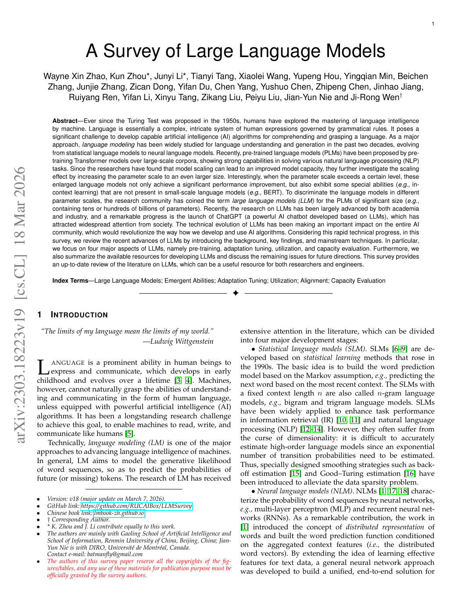
1 引言
“我的语言的界限，意味着我的世界的界限。”语言是人类表达与交流的突出能力，从幼年开始发展并贯穿一生持续演化。机器不会自然获得以人类语言理解和沟通的能力，除非为它配备强大的人工智能算法。如何让机器像人一样阅读、写作和交流，是一个长期研究目标。
语言建模是推进机器语言智能的主要技术路径之一。一般而言，语言模型旨在刻画词序列的生成概率，从而预测未来或缺失的词元。相关研究大致经历四个阶段。
1.1 统计语言模型
20 世纪 90 年代兴起的统计语言模型建立在统计学习方法上，基本思想是在马尔可夫假设下，根据最近上下文预测下一个词。固定上下文长度为 $n$ 的模型也称为 $n$ 元语言模型，例如二元和三元模型。它们曾广泛用于信息检索与自然语言处理，但会受到维数灾难影响：阶数升高后，需要估计的转移概率呈指数增长。退避估计、Good-Turing 估计等平滑策略被用来缓解数据稀疏。
1.2 神经语言模型
神经语言模型使用多层感知机、循环神经网络等神经网络刻画词序列概率。代表性工作引入词的分布式表示，根据聚合后的上下文特征预测词语。沿着自动学习文本有效特征的思路，端到端神经网络逐渐取代需要人工设计特征的传统方法。循环神经网络及长短期记忆网络能够处理更长依赖，但训练难以充分并行，长序列中的信息传播路径仍然较长。
1.3 预训练语言模型
Transformer 以自注意力取代循环结构，让序列中不同位置直接交互并支持并行训练。BERT、GPT 等预训练语言模型在海量无标注文本上学习通用表示，再通过任务微调迁移到下游任务。与为单一任务从头训练相比，“预训练再适配”显著降低数据需求，并在理解与生成任务上取得突破。
1.4 大型语言模型
继续扩大参数、数据与计算后，预训练语言模型发展为大型语言模型。GPT-3、PaLM、LLaMA 等模型具有更强的语言理解、生成、知识使用和复杂任务求解能力，还出现上下文学习、遵循指令和逐步推理等涌现能力。它们能够通过自然语言提示作为通用任务求解器，扩大了语言模型可处理任务的范围。
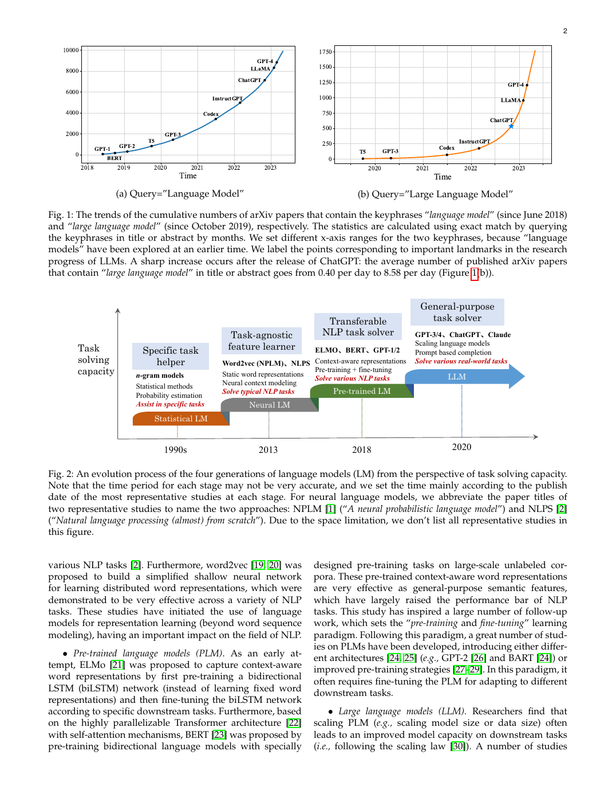
现有文献已大量综述预训练语言模型，但较少系统覆盖大型语言模型。作者强调两者的三项主要差异。第一，大型语言模型表现出小模型中难以观察到的涌现能力，使人工智能算法在复杂任务上更强。第二，使用方式发生变化：用户通常不再针对每个任务修改模型，而是通过提示、上下文示例和接口调用同一个通用模型。第三，大型语言模型的开发把工程系统、数据治理、安全对齐和部署监控推到与模型结构同等重要的位置。
大型语言模型同时带来三类核心挑战。其一，涌现能力何时、为何出现尚缺少有原则的解释。其二，训练需要巨量计算资源，学术界很难重复开展消融实验；许多关键训练细节又掌握在产业机构手中，没有完全公开。其三，如何把模型行为与人类价值和偏好对齐仍很困难，模型可能生成有毒、虚构或有害内容，必须建立有效且高效的控制方法。
本文从预训练、后训练、使用、能力评估四个方面梳理技术，并补充公开模型、数据集和软件资源；随后给出提示设计实践、典型应用与高级专题，最后总结主要发现和未来问题。
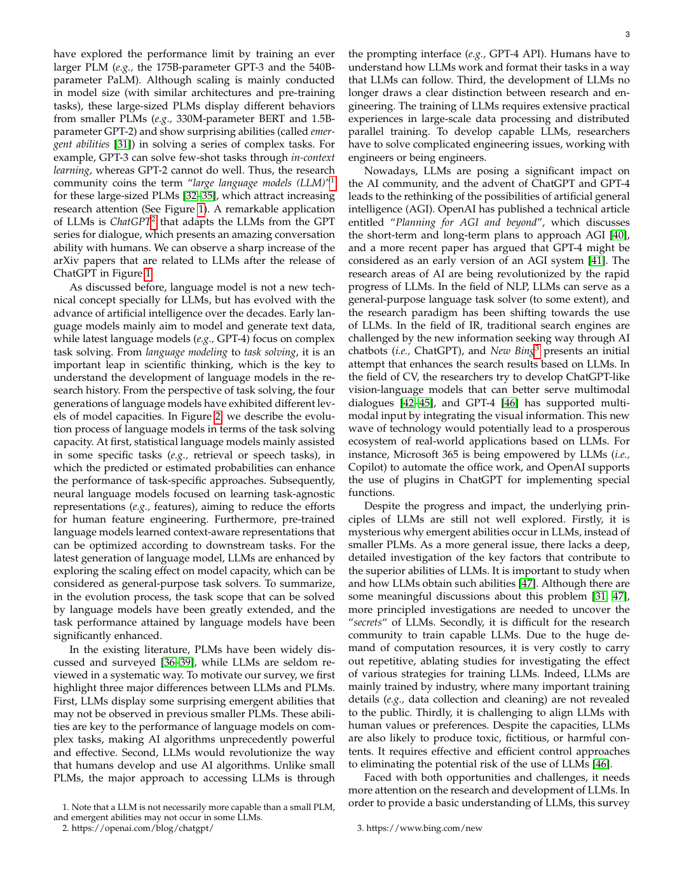
2 概述
2.1 大型语言模型背景
本文以较宽松定义使用“大型语言模型”：主要指基于 Transformer、参数通常超过 100 亿、在海量文本上训练的语言模型。参数规模不是唯一判断标准，能力还取决于数据规模、质量、训练计算和后训练方式。
2.1.1 缩放规律
大型语言模型与小模型往往采用相似架构和语言建模目标，主要区别是参数、数据和计算扩大了数个数量级。大量研究显示，扩大这些因素通常能稳定提高模型能力，因此需要用定量规律刻画这种变化。
Kaplan 等人提出模型性能与模型规模 $N$、数据规模 $D$、训练计算量 $C$ 之间近似服从幂律。其经验规律表明，在其他因素不构成瓶颈时，交叉熵损失会随着三者扩大而平滑下降。该规律更偏向把新增计算分配给更大的模型。
Chinchilla 缩放规律使用更广的模型与数据范围重新拟合损失：
在训练计算近似满足 $C\approx6ND$ 的约束下，结果显示模型规模与训练词元数应近似同步扩大。它说明许多早期大模型训练数据不足，在固定计算预算下，用更多数据充分训练较小模型可能取得更好效果。
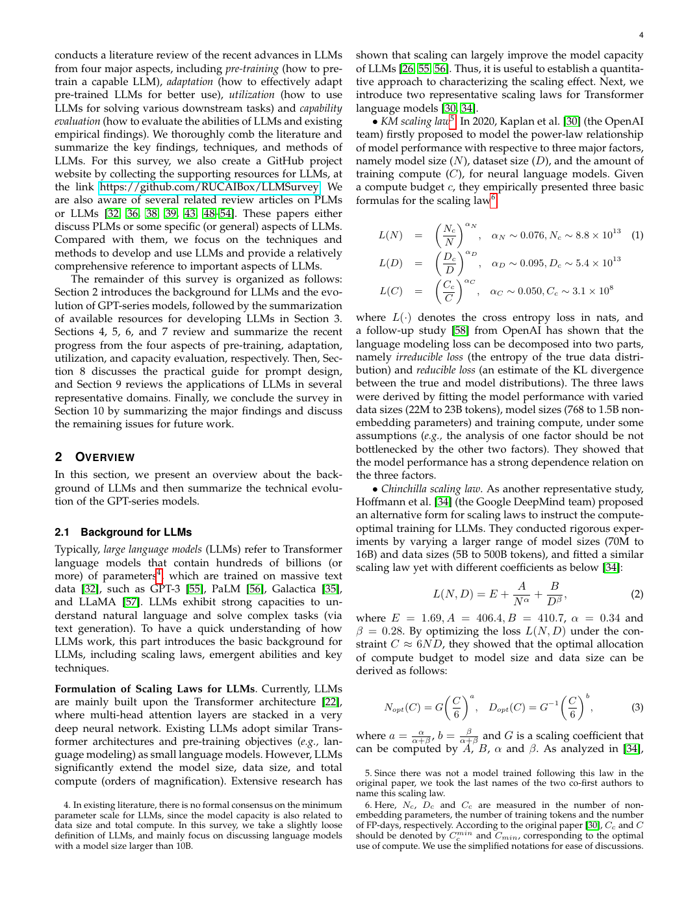
缩放规律有两项实际价值。第一，可以用小型代理模型筛选数据配比、训练设置和架构选择，再预测大模型表现，避免在昂贵大规模训练上反复试错。第二，可以监控长周期训练，在早期发现异常损失、训练尖峰和偏离预期的性能。
缩放也存在收益递减，公开高质量文本可能很快被消耗殆尽，因此需要研究数据受限条件下的重复、增强和合成数据。语言建模损失下降也不必然转化为所有任务变好；某些任务存在逆缩放，实际任务的难度、指标和数据分布都会影响结果。GPT-4 表明某些能力可以预测，但上下文学习等能力可能只在跨过阈值后出现。
2.1.2 涌现能力
涌现能力是“小模型中不存在、但在大模型中出现的能力”。其典型表现是模型规模达到某个水平后，任务成绩从接近随机突然显著上升，类似物理中的相变。临界规模不是固定常数，会因模型系列、训练数据和任务而变化。
上下文学习。 给模型自然语言指令和少量任务示例后，它无需更新参数，就能通过续写输入序列生成测试样本的答案。GPT-3 正式展示了这种能力。能力随任务而异：某些算术任务在较小模型上已出现，某些低资源问答即使在更大模型上也不理想。
遵循指令。 把大量任务统一改写为自然语言指令并进行微调后，模型能处理未见过、但同样以指令描述的新任务。实验显示，指令微调的收益在模型达到一定规模后明显增强；不同任务所需规模并不相同。
逐步推理。 对涉及多步计算或逻辑的复杂任务，要求模型生成中间推理步骤可以显著提升最终答案质量。思维链能力在足够大的语言模型中更明显，并可与自一致性、工具调用和规划结合。
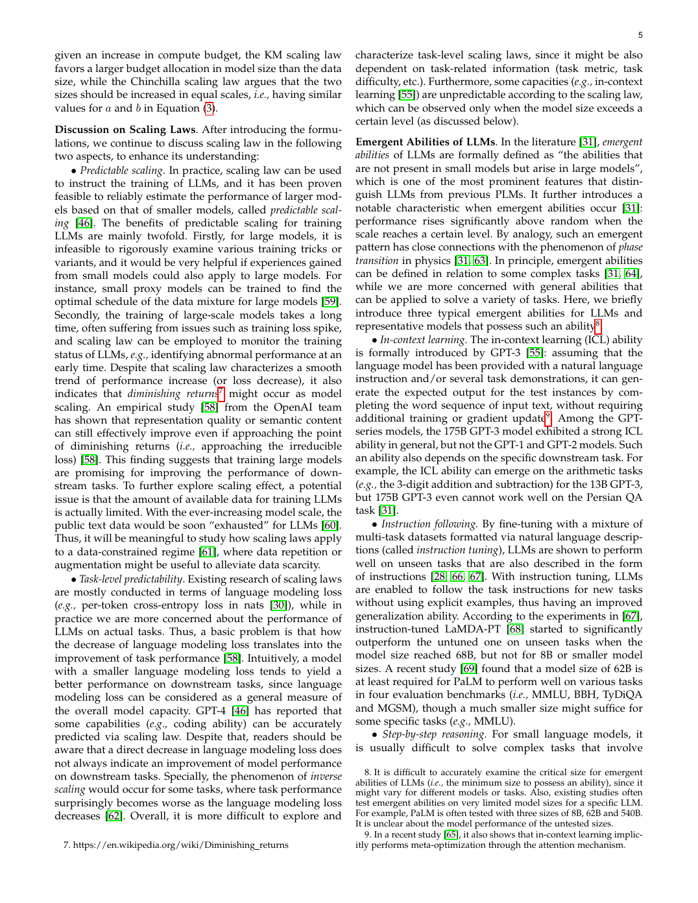
2.1.3 关键技术
大型语言模型的成功不是单一因素造成的。主要技术包括：扩大模型、数据和计算；为训练稳定性设计并行系统、混合精度和优化方法；收集并清洗高质量、多样化语料；通过指令微调激活通用任务能力；使用人类反馈或人工智能反馈进行偏好对齐；通过上下文示例、思维链、规划、检索和工具调用充分使用模型；以及建立覆盖能力、可靠性和安全性的评估。
模型规模扩大后，数据质量和组成更重要。代码、数学和高质量知识文本常能改善推理；多语言数据带来跨语言迁移；去重、污染控制和数据调度影响记忆与泛化。后训练把预训练模型从文本续写器转变为更容易交互的助手，但也可能损害校准性、知识或多样性，因此需要控制训练强度和数据分布。
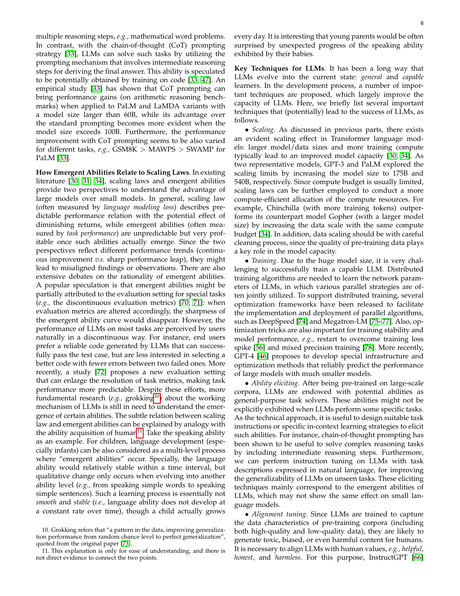
2.2 GPT 系列的技术演进
GPT 系列体现了大型语言模型从生成式预训练走向通用助手的主要路线。
2.2.1 GPT-1：生成式预训练与判别式微调
GPT-1 使用 Transformer 解码器先在无标注文本上进行自回归语言建模，再针对分类、推理、相似度和问答等任务微调。通过把不同任务输入转成统一序列格式，同一模型可以少量修改完成多种任务。这项工作确立了“通用预训练加任务适配”的基础范式。
2.2.2 GPT-2：无监督多任务学习
GPT-2 扩大模型与网页数据，测试不做任务参数更新时的零样本能力。任务描述、输入和输出都被视为自然语言序列，模型根据上下文推断要执行的任务。研究表明，规模增长会自然带来一定多任务能力，也推动了提示式使用方法。
2.2.3 GPT-3：上下文学习
GPT-3 扩展到 1750 亿参数，用零样本、单样本和少样本提示评估多种任务。模型无需梯度更新，只通过上下文示例适配任务。尽管复杂推理和事实可靠性仍有限，它证明大型自回归模型可以成为通用少样本学习器。
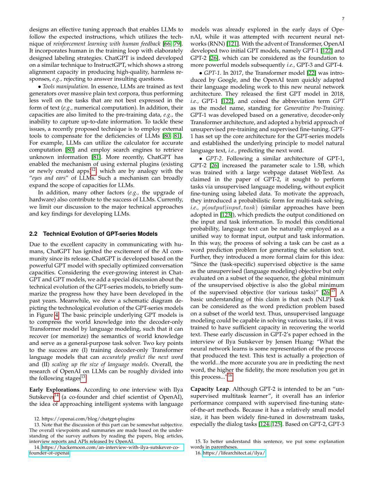
2.2.4 从基础模型到 GPT-3.5
OpenAI 在 GPT-3 基础上持续改进代码训练、指令微调与人类对齐。Codex 使用大量公开代码微调 GPT 模型，显著提升代码生成能力。代码数据结构清晰，包含长程依赖与可执行反馈，可能同时帮助数学和逐步推理。
人类对齐路线从“从人类偏好中学习”开始，使用人类比较训练奖励模型，再以强化学习优化策略。近端策略优化成为主要算法。InstructGPT 最终形成三阶段流程：监督微调、人类偏好奖励模型、使用奖励信号进行强化学习。它不仅改善指令遵循，也降低有害或有毒输出。
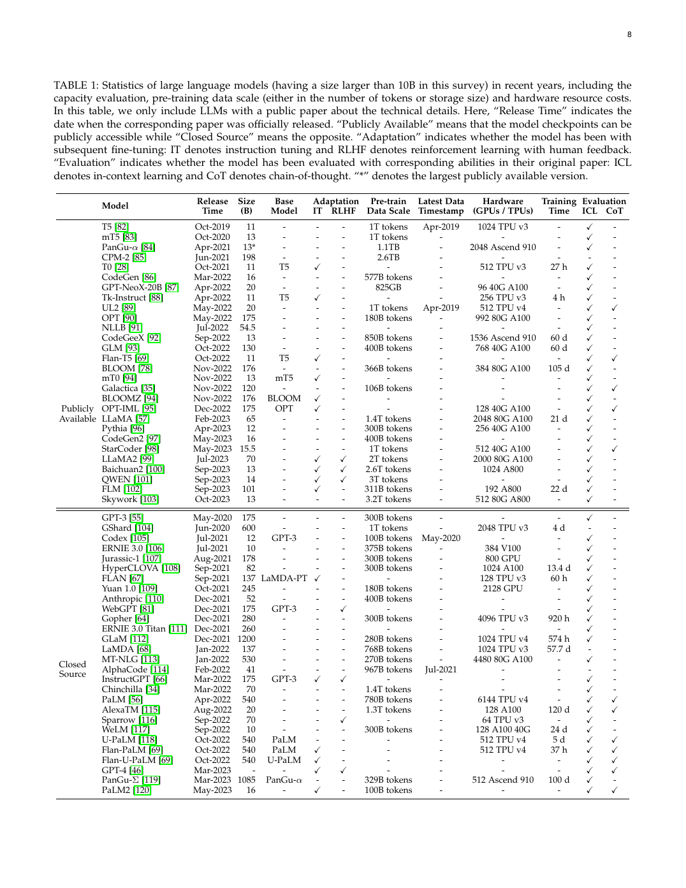
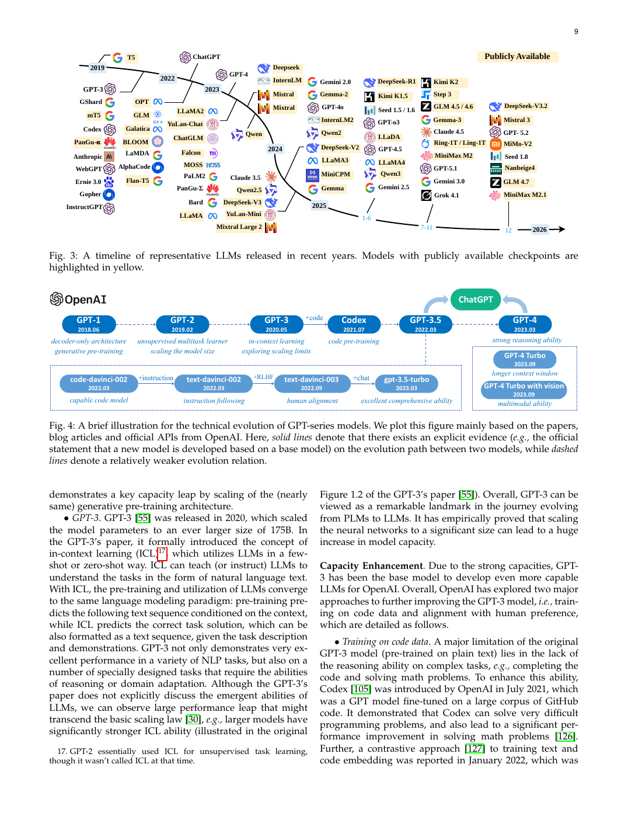
2.2.5 ChatGPT、GPT-4 与后续模型
ChatGPT 在 InstructGPT 方法上针对多轮对话优化。数据收集加入人类同时扮演用户和助手生成的对话，并把 InstructGPT 数据转成对话格式。模型能够追踪多轮上下文、回答知识问题、处理数学推理并更好遵循安全偏好；插件机制进一步把模型连接到外部工具和应用。
GPT-4 把输入从纯文本扩展到图像与文本，在复杂任务上明显超过 GPT-3.5。它经过六个月迭代对齐，引入额外安全奖励，并使用红队测试降低幻觉、隐私、过度依赖和有害内容风险。项目还建立可预测缩放机制，用小比例计算预测最终表现。
GPT-4V 扩展视觉能力并重点评估视觉输入风险；GPT-4 Turbo 把上下文扩展到 128K，更新知识、降低价格并增强函数调用和可复现输出；Assistants API 为构建具备指令、知识和工具的目标导向助手提供接口。模型能力持续增强，但幻觉和高风险回答等局限仍然存在，需要迭代部署、监控和治理。
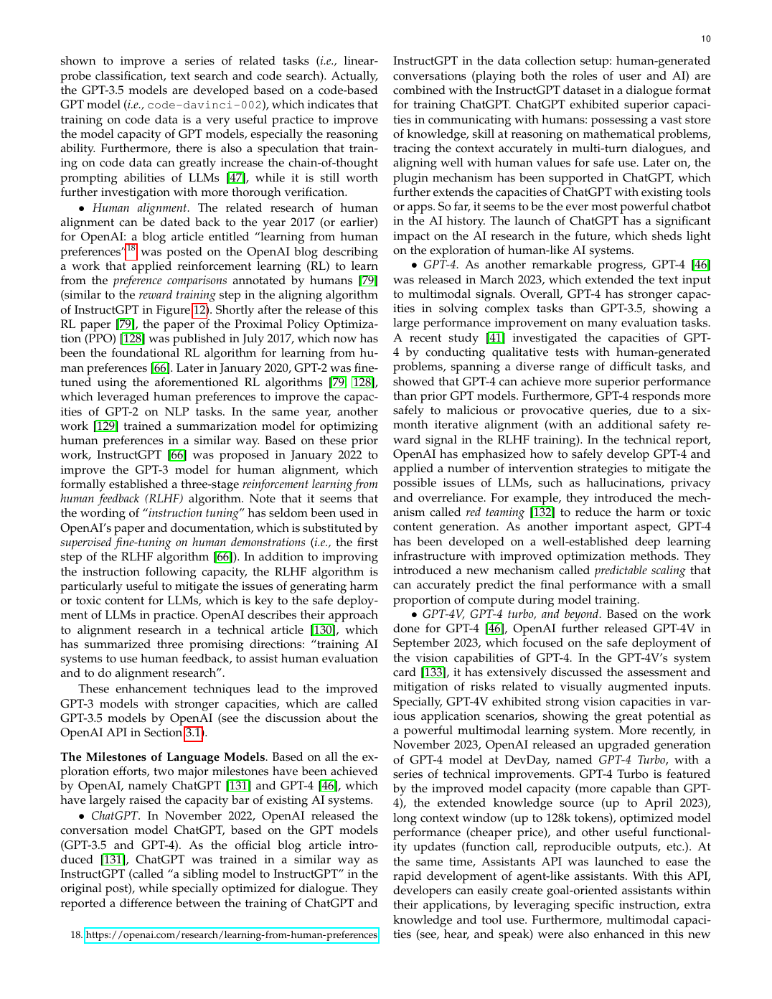
3 大型语言模型资源
开发或复现大型语言模型需要高昂计算资源和复杂工程。研究者可以复用公开模型、语料、指令数据和训练库，进行增量开发与实验。
3.1 公开模型权重与接口
公开权重使研究者能够在本地评估、微调、量化和部署模型；闭源模型通常通过 API 提供能力。选择模型时应同时考虑参数规模、训练数据、上下文长度、许可证、硬件需求、语言覆盖和任务表现。
综述介绍了 LLaMA、Mistral、Gemma、Qwen、GLM、Baichuan 等系列。LLaMA 从 7B 至 405B 持续扩展，训练词元和上下文窗口显著增加，并加入安全工具；Mistral 使用滑动窗口、分组查询注意力和稀疏专家结构提高效率；Gemma 面向轻量开放部署；Qwen 强化中英、多语言、代码、数学、长文本和结构化数据；GLM 与 Baichuan 重视中英双语及对话。
模型生态还包括 BLOOM、OPT、Falcon、MPT、InternLM、Yi、DeepSeek、Mixtral 等开放模型，以及 GPT、Claude、Gemini 等 API。派生工作通过持续预训练加入新语言或领域数据，通过全参数或参数高效微调形成对话、数学、金融、医疗、法律和多模态模型。
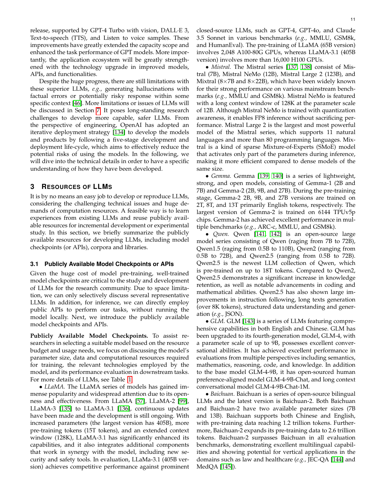
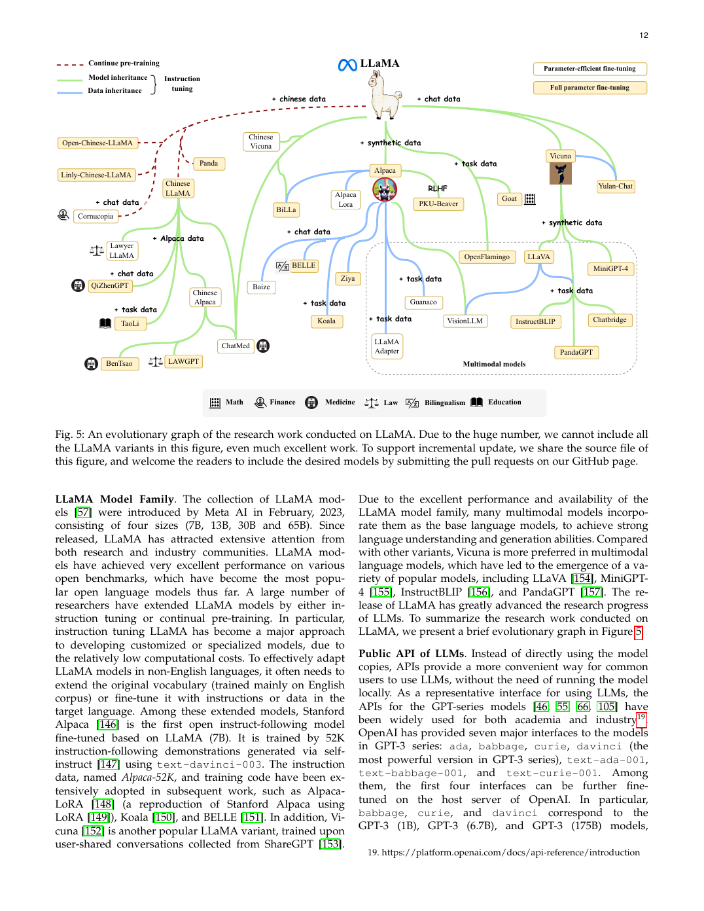
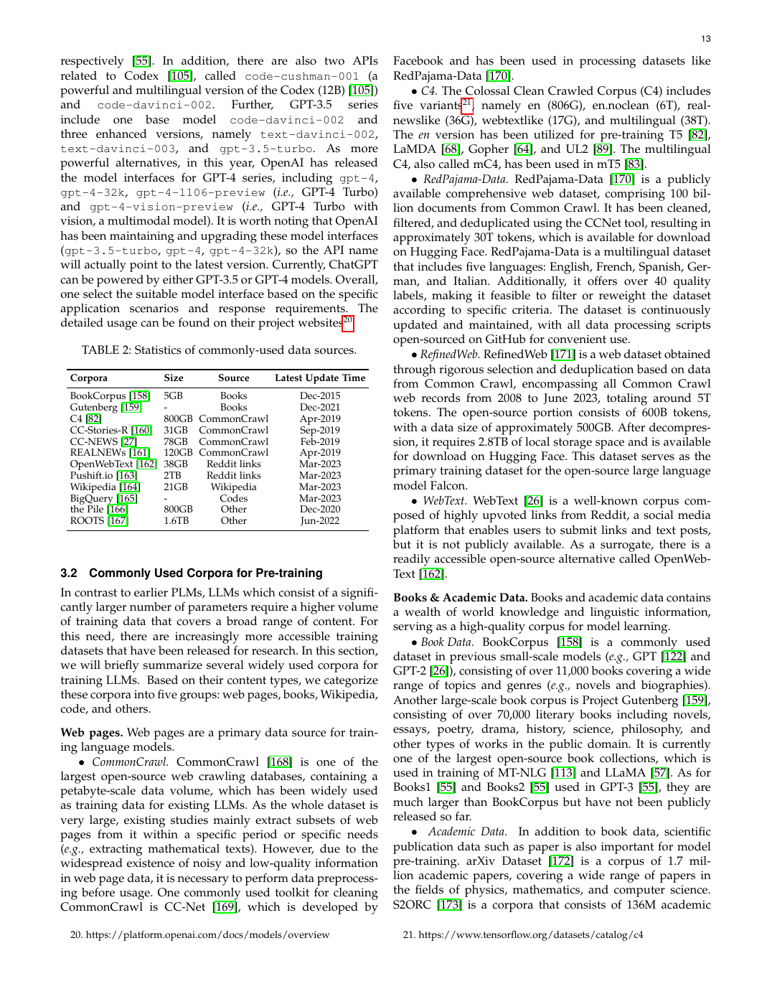
3.2 常用预训练语料
预训练语料主要来自网页、书籍、百科、新闻、学术论文、社交媒体、对话和代码。常见资源包括 Common Crawl、C4、The Pile、ROOTS、RedPajama、RefinedWeb、Dolma、SlimPajama、FineWeb、Wikipedia、BookCorpus、Project Gutenberg、arXiv、PubMed 和 GitHub。
网页数据规模大、覆盖广，但噪声、重复、垃圾内容和隐私风险较高，需要语言识别、质量过滤、去重和安全过滤。书籍与论文文本更连贯，适合长程建模；百科和知识网站有利于事实知识；代码数据可以增强代码生成与结构化推理；多语言语料决定模型跨语言覆盖。许可证与版权状态也必须纳入数据选择。
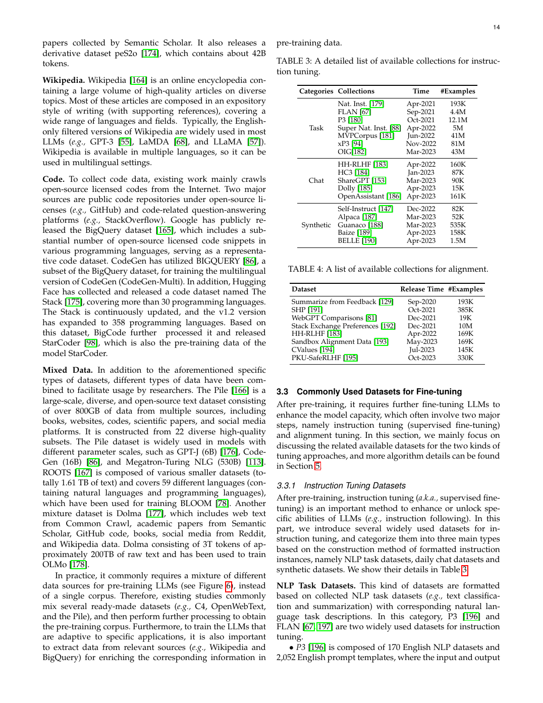
3.3 常用后训练数据集
3.3.1 指令微调数据集
指令数据通常包含任务描述、可选输入和目标回答。来源包括把传统自然语言处理数据集统一格式化、人工编写指令与回答、模型自生成与改写、从真实用户交互中筛选，以及混合代码、数学和多轮对话数据。代表性资源包括 Natural Instructions、FLAN、Super-NaturalInstructions、P3、Self-Instruct、Alpaca、Dolly、OpenAssistant、ShareGPT 和 UltraChat。
3.3.2 对齐数据集
对齐数据通过成对偏好、排序、评分、批评和安全标签表达期望行为。数据既可由人类标注，也可由更强模型依据原则生成。常见资源包括摘要偏好、WebGPT 比较、HH-RLHF、SHP、PKU-SafeRLHF、UltraFeedback 和 HelpSteer 等。标注者背景、规范、任务难度和回答采样方式都会影响偏好分布。
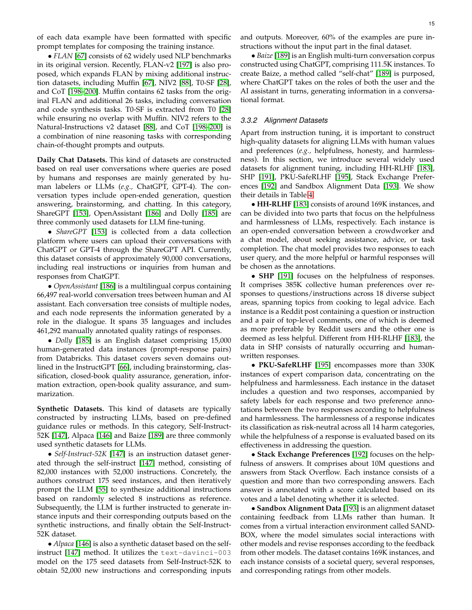
3.4 软件库资源
Hugging Face Transformers、DeepSpeed、Megatron-LM、Colossal-AI、Alpa、FairScale、FSDP 和 FastMoE 等库覆盖模型实现、并行训练、混合精度、优化器与稀疏专家。PEFT、TRL、LLaMA-Factory、Axolotl 等工具支持参数高效微调、监督微调和偏好优化；vLLM、TensorRT-LLM、Text Generation Inference、SGLang 等用于高吞吐推理和服务。
选择库时应根据模型规模、GPU 拓扑、并行策略、检查点格式和部署目标判断。库降低工程门槛，但不同实现的数值稳定性、通信方式和默认超参数可能影响结果，仍需明确记录版本与配置。
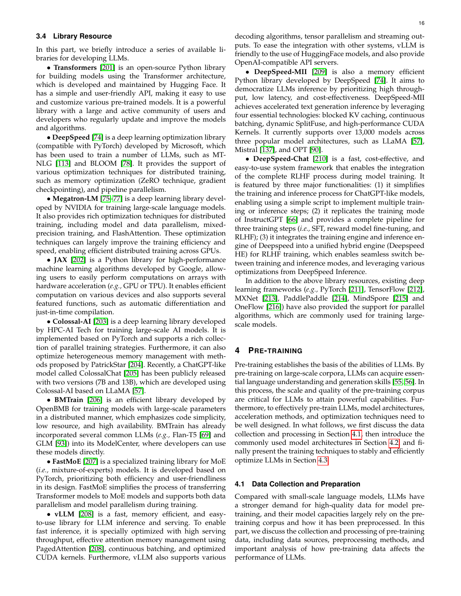
4 大型语言模型预训练
预训练决定模型的基础知识、语言能力和能力上限。本节从数据收集与准备、模型架构和可扩展训练三方面总结。
4.1 数据收集与准备
4.1.1 数据来源
通用文本。 网页、书籍和对话数据提供广泛主题与自然语言模式。网页语料需要以质量分类器筛选；书籍有利于长文本一致性；对话数据能改善交流能力，但公开对话可能包含隐私、偏见和低质量内容。
专业文本。 科学论文、医学、法律、金融和教育材料可增强领域知识。专业语料比例过低时效果有限，过高又可能损害通用能力，通常需要与通用语料混合或用于继续预训练。
代码。 代码具有明确语法、变量依赖和可执行反馈，是代码模型的直接来源，也可能改善推理和规划。高质量仓库需要按许可证、文件质量、重复、自动生成内容和泄漏进行过滤。
多语言文本。 多语言数据支持跨语言理解与生成，但互联网资源极不均衡。简单按原始规模混合会让英语占据主导，需要上采样低资源语言、质量分级和共享分词。
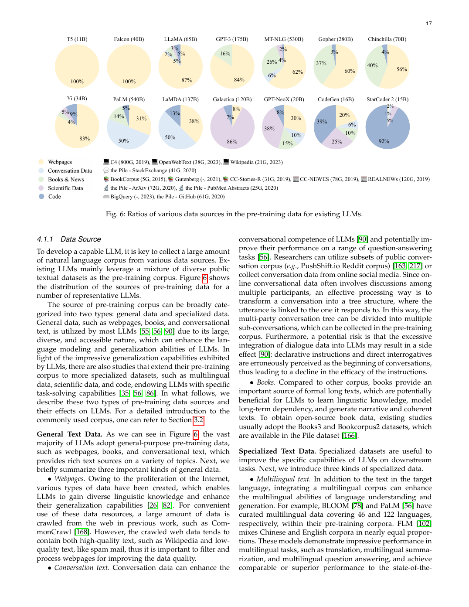
4.1.2 数据预处理
预处理通常包括质量过滤、去重、隐私与有害内容处理、分词和污染控制。
质量过滤可以使用规则、词表、语言模型困惑度或训练分类器，去除菜单、模板、垃圾页面、乱码和机器生成噪声。过严过滤可能缩窄观点与语言多样性，因此应在质量和覆盖之间平衡。
去重可在文档、段落和字符串片段层面进行。精确哈希删除完全重复，MinHash 和局部敏感哈希处理近似重复。去重能降低记忆、评测污染和训练浪费，但也可能误删合法重复结构。
隐私处理识别电话号码、电子邮箱、地址、账号等个人信息；安全过滤减少色情、暴力和仇恨内容。过滤器自身可能带偏见，且无法完全清除风险。评测数据污染需要把训练语料与基准题目匹配，记录污染比例，必要时重新构建留出集。
分词常使用 BPE、WordPiece 或 SentencePiece。词表大小影响序列长度、多语言公平和代码效率；数字、空白和特殊字符的处理也会影响数学与编程能力。
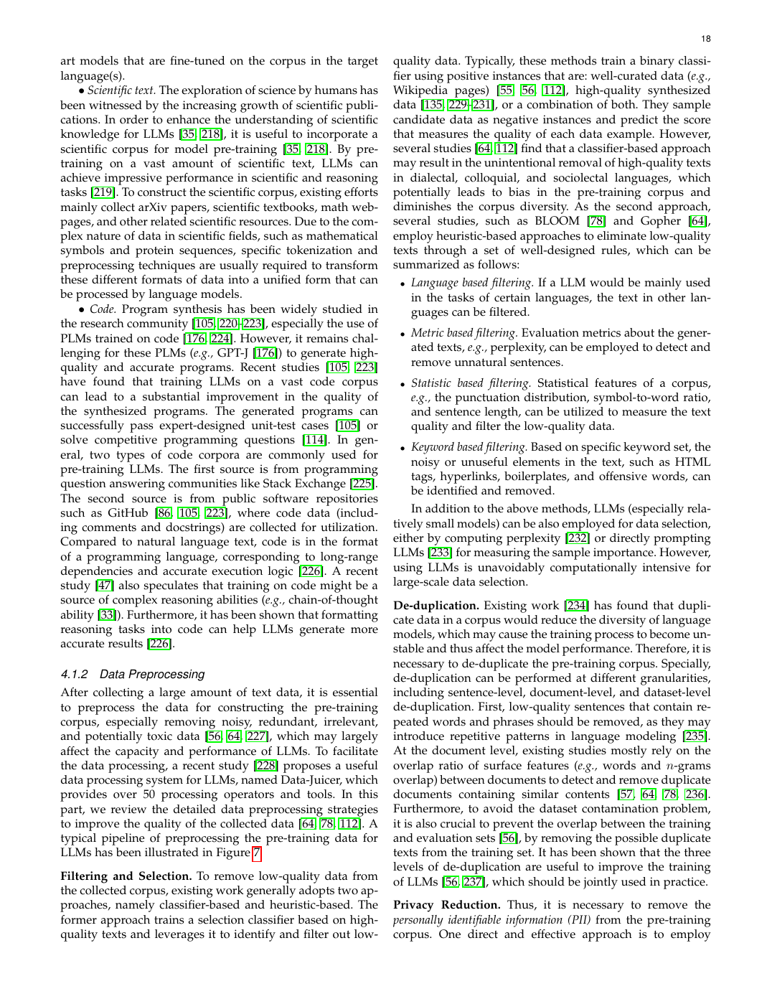
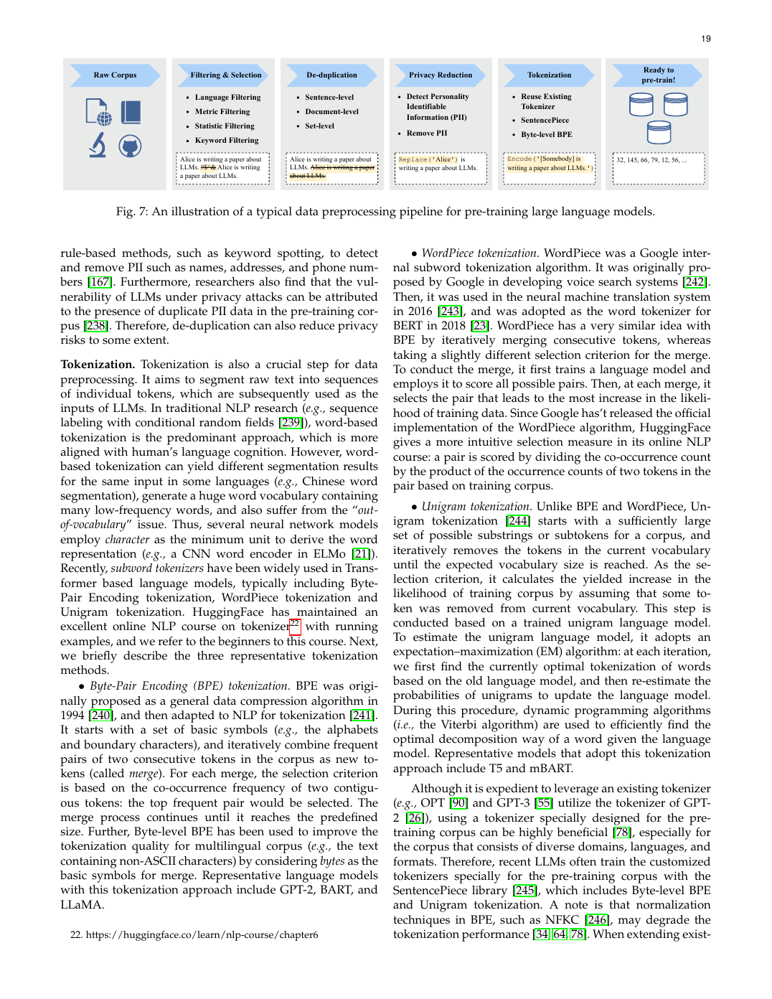
4.1.3 数据调度
预训练不是简单随机混合全部语料。不同来源的采样比例决定模型能力结构。可按数据规模设置温度采样，提升高质量或低资源语料比例；也可用小型代理模型学习各领域权重，使验证损失最优。
课程学习按训练阶段改变数据。早期使用多样通用数据学习语言基础，后期增加高质量、代码、数学和长上下文数据，以改善特定能力。数据顺序还可从易到难、从短到长，或在训练末期加入退火数据。调度必须避免后期数据过窄导致灾难性遗忘。
4.1.4 数据准备总结
有效数据方案应同时明确来源、许可证、清洗规则、去重粒度、混合权重、训练顺序和评测污染。数据量并非越多越好；质量、多样性和与目标能力的匹配共同决定收益。合成数据可以扩展稀缺任务，但必须控制模型错误的自我强化和分布坍缩。
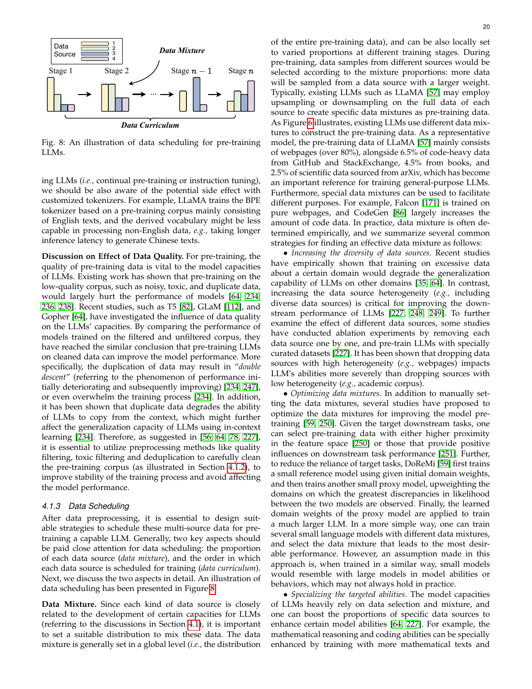
4.2 模型架构
4.2.1 典型架构
大型语言模型主要采用三种 Transformer 形式：编码器-解码器、因果解码器和前缀解码器。编码器-解码器分别对输入和输出建模，适合条件生成；因果解码器只能关注当前位置之前的词元，以统一的下一词预测完成理解和生成；前缀解码器允许输入前缀双向注意，输出部分保持因果注意。
当前主流大型语言模型大多使用因果解码器，因为目标统一、实现简洁、易于规模扩展，并在零样本和少样本生成中表现强。T5 等模型证明编码器-解码器在多任务和条件生成上仍有优势。除 Transformer 外，Mamba 等状态空间模型、RWKV、Hyena 和线性注意力尝试以线性或近线性复杂度处理长序列。
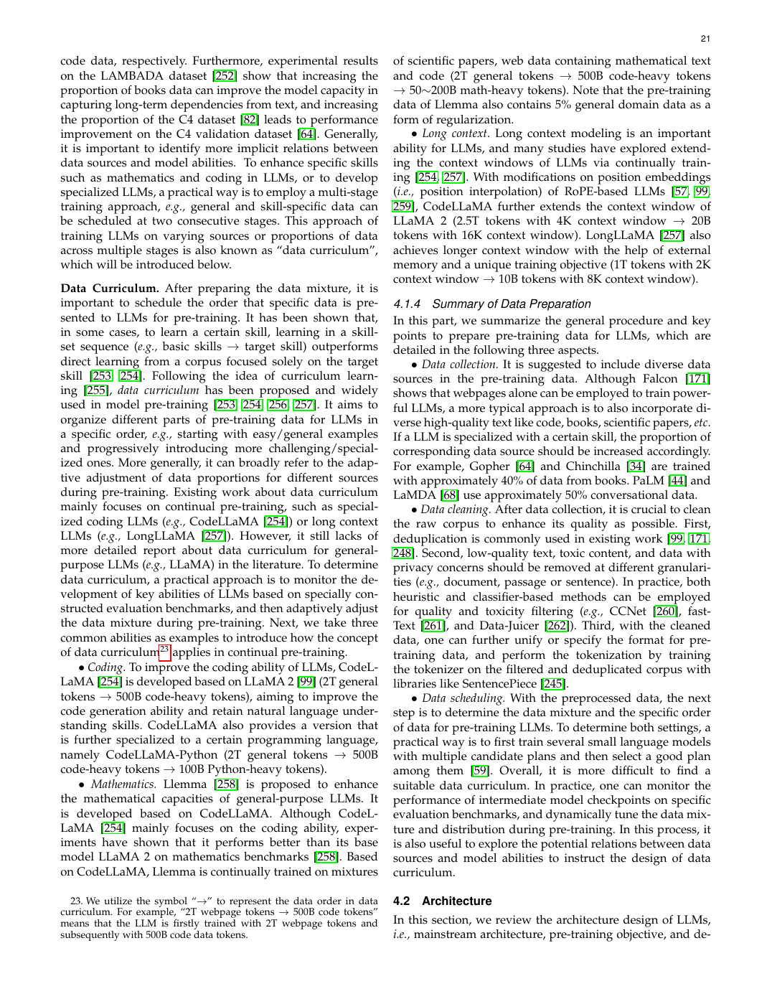
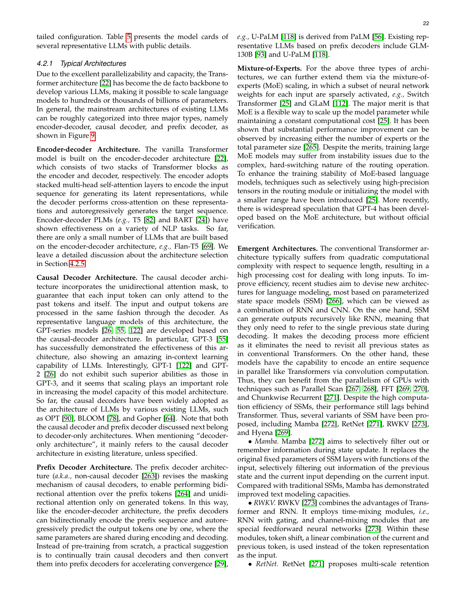
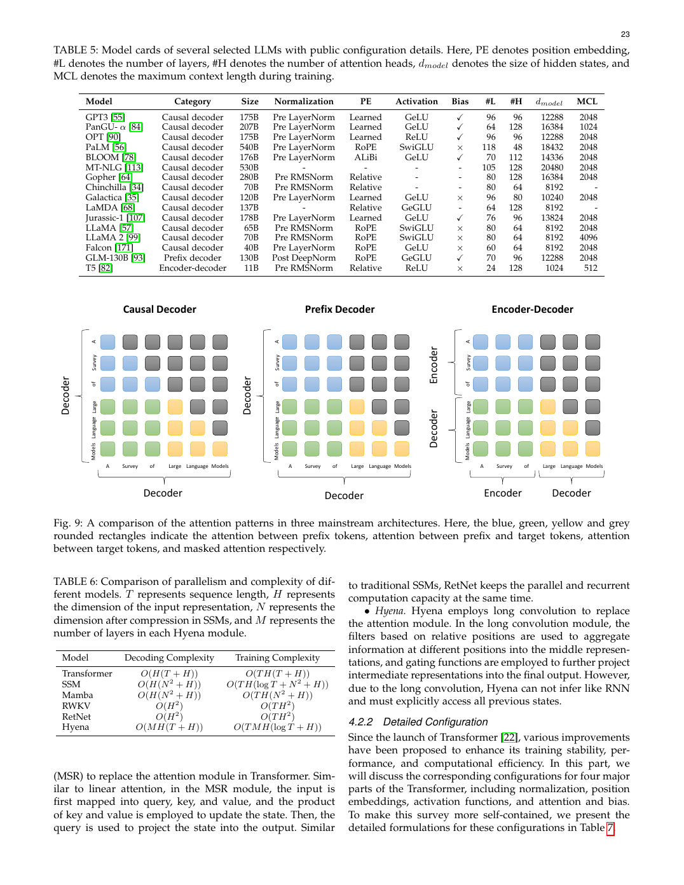
4.2.2 详细配置
归一化。 早期 Transformer 使用后归一化，现代大模型常用前归一化提高深层训练稳定性。RMSNorm 省去均值中心化，计算更简单，被 LLaMA 等模型广泛采用。
激活函数。 ReLU 逐渐被 GELU、SwiGLU 和 GeGLU 替代。门控线性单元增加参数和计算，但通常改善拟合与训练稳定性。
位置编码。 绝对位置嵌入简单，但外推有限；相对位置偏置直接建模位置差；旋转位置编码把位置信息作用于查询和键，便于长度扩展；ALiBi 用距离相关偏置支持更长上下文。
注意力与偏置。 多查询注意力让所有头共享键值，分组查询注意力在质量与缓存之间折中。许多模型移除线性层偏置和 dropout，以简化训练；FlashAttention 通过分块和减少显存访问加速精确注意力。
混合专家。 稀疏专家模型用路由器为每个词元选择少数前馈专家，在相近激活计算下扩大总参数。关键问题是负载均衡、通信成本、专家坍缩和稳定训练。
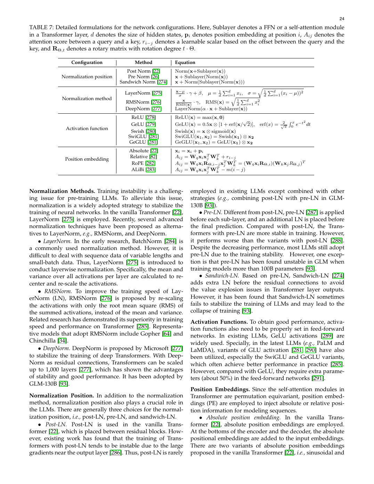
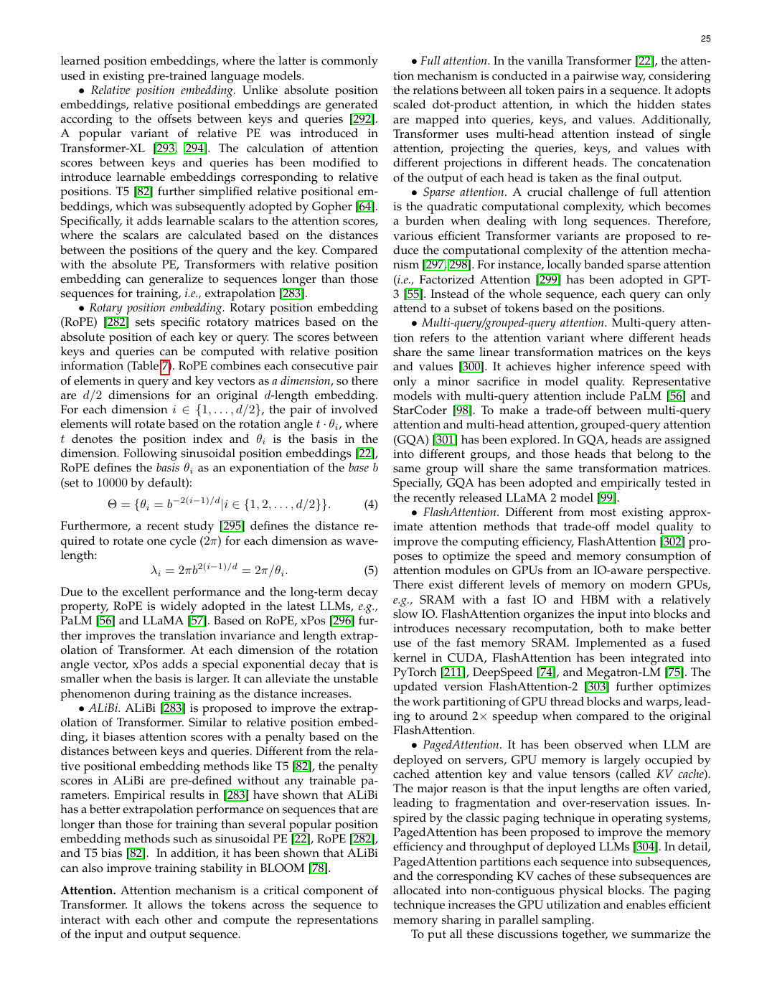
4.2.3 预训练任务
主流因果模型采用下一词预测：给定前缀，最大化后续词元条件概率。目标与文本生成一致，能在单一框架中处理不同任务。编码器模型常用遮蔽语言建模，随机遮蔽词元并根据双向上下文恢复；编码器-解码器模型可使用去噪目标，把被删除或破坏的片段作为输出重建。
任务选择决定表示方式。因果目标更适合开放生成与上下文学习，遮蔽目标适合理解和表示，去噪目标兼顾输入编码与条件生成。部分模型混合多个目标或改变注意掩码，但规模扩大时简单稳定的因果目标最常见。
4.2.4 解码策略
贪心解码每步选择最高概率词元，结果稳定但可能重复或缺乏多样性。束搜索保留多个候选，适合翻译等有明确目标的任务，但开放生成可能过于保守。温度控制概率分布平滑度；top-k 只从概率最高的 $k$ 个词元采样；top-p 从累计概率达到阈值的最小集合采样。重复惩罚、停止词和最大长度进一步控制输出。
任务要求决定策略：事实问答和代码常使用低温度，创意生成使用更高温度；自一致性推理则采样多条路径后投票。解码会影响能力评估，报告结果时必须记录参数。
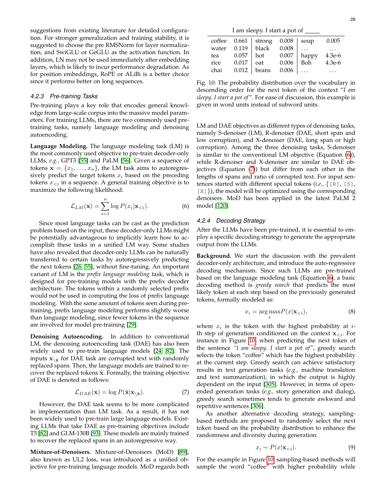
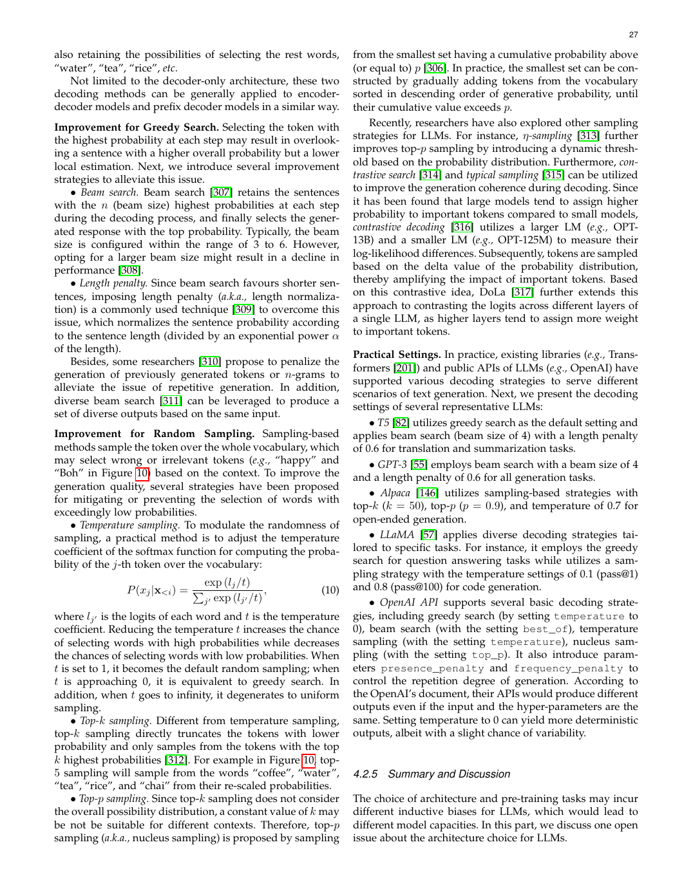
4.2.5 总结与讨论
因果解码器凭借统一目标、强少样本能力和良好缩放成为主流，但这不是严格证明其在所有场景最优。编码器-解码器在输入理解和条件生成中可能更高效，新型状态空间和混合架构则为长上下文提供选择。架构比较应控制参数、数据、计算和训练配方，否则很难把性能差异归因于结构本身。
4.3 模型训练
4.3.1 优化设置
批量大小通常随训练逐步增加，以稳定早期优化并提高后期吞吐。学习率先预热到峰值，再使用余弦、线性或反平方根衰减。Adam、AdamW 和 Adafactor 是常用优化器；权重衰减、梯度裁剪和适当初始化用于稳定训练。
大型训练容易出现损失尖峰。实践中会回退到较早检查点、跳过可疑数据、缩放嵌入层梯度并调整精度。BF16 比 FP16 具有更大指数范围，通常更稳定；关键归一化、优化器状态或梯度归约仍可保留 FP32。
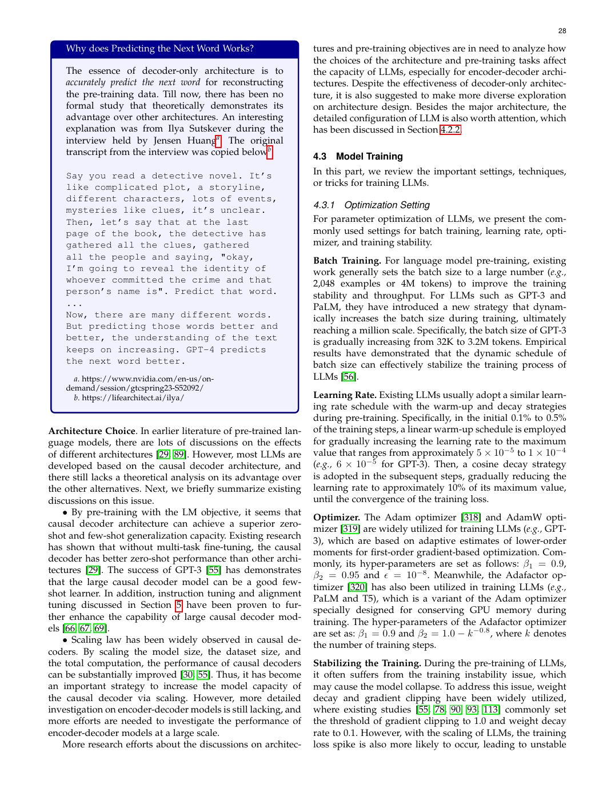
4.3.2 可扩展训练技术
数据并行。 每张 GPU 保存模型副本并处理不同数据，再聚合梯度。方法吞吐扩展好，但参数、梯度和优化器状态重复占用显存。ZeRO 和全分片数据并行把这些状态分散到设备。
流水线并行。 不同层分配到不同 GPU，微批次在阶段间流动。朴素实现会产生等待气泡，交错调度和异步更新可提高利用率。
张量并行。 把单层矩阵沿列或行切分到多张 GPU，并通过通信组合结果。它适合单层已经无法放入一张卡的模型，但通信频繁，通常限于高速互联节点内。
三者组成“三维并行”。激活重计算用额外计算换显存，CPU 或 NVMe 卸载进一步降低 GPU 占用。混合精度减少内存和通信。训练配置要结合设备互联、模型尺寸、序列长度和批量大小设计，而不是盲目增加并行维度。
例如，BLOOM 使用 8 路数据并行、4 路张量并行和 12 路流水线并行，在 384 张 A100 上训练。DeepSpeed、Megatron-LM、Colossal-AI、Alpa 与 PyTorch FSDP 已集成多种技术。长周期训练还应使用小模型预测性能、持续记录损失与梯度，并尽早发现异常。
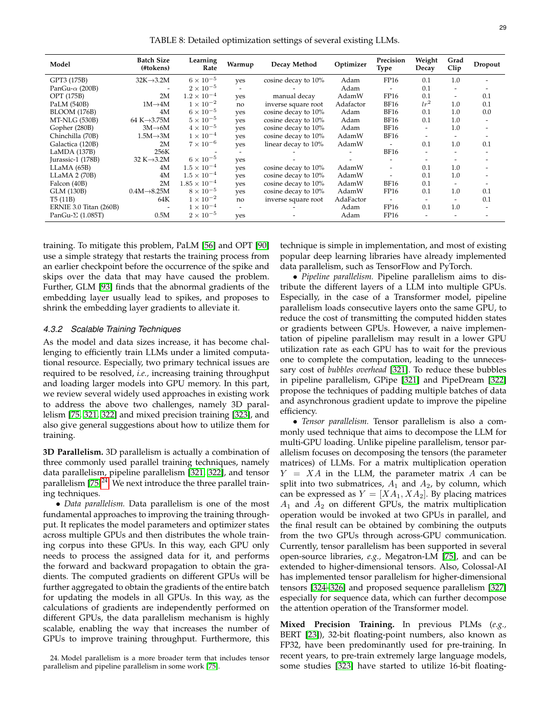
5 大型语言模型后训练
预训练赋予通用能力，但模型行为还需按实际目标适配。本文把后训练分为指令微调、对齐微调和参数高效适配。指令微调主要增强或激活任务能力；对齐微调使行为符合人类价值与偏好；参数高效方法让资源有限的团队也能适配模型。
5.1 指令微调
指令微调使用自然语言格式的实例监督训练模型。每个实例通常包含任务描述、可选输入、目标输出和少量示例。统一格式使一个模型能在多任务上训练，并泛化到未见指令和多语言任务。
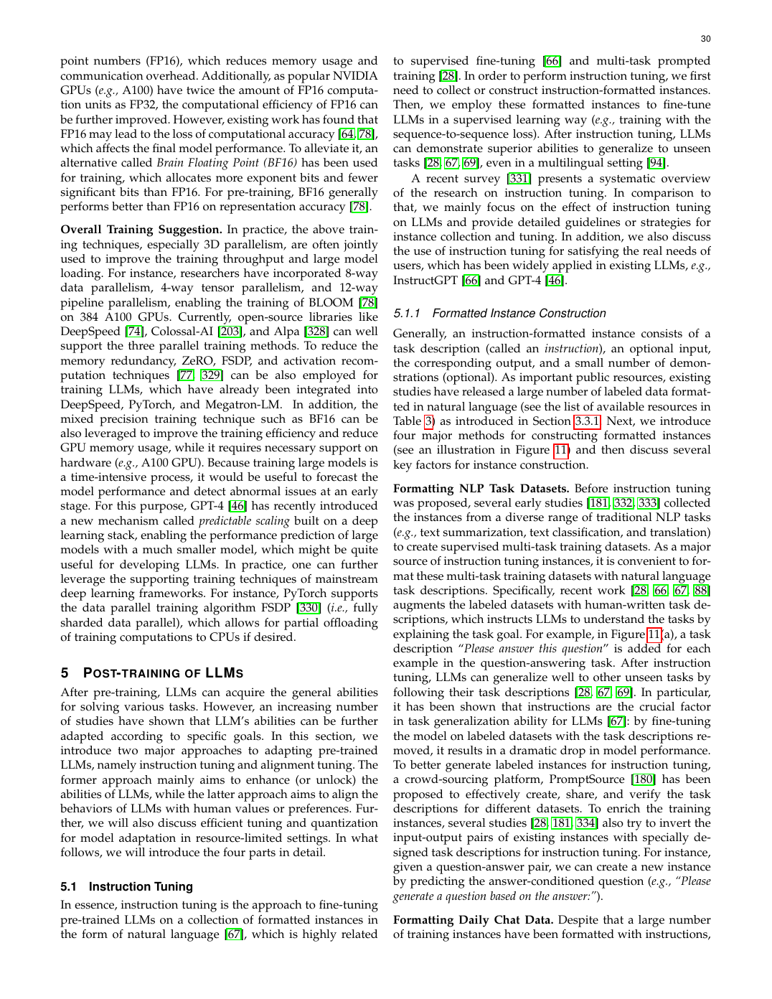
5.1.1 格式化实例构建
构建方式主要有四类。
- 格式化传统任务。 给分类、问答、摘要、翻译等已有数据集增加人工任务描述；还可反转输入输出，形成由答案生成问题等新任务。
- 整理日常对话。 把真实或人工编写的多轮问答转成角色序列，使模型学习上下文追踪、澄清与助手语气。
- 人工编写指令。 标注者直接提出多样需求并写高质量回答，质量较高但成本大，容易受标注群体偏好限制。
- 合成指令。 用强模型从少量种子任务生成新指令、输入和回答，再过滤重复、错误和不安全内容。Self-Instruct 与 Alpaca 展示了这种低成本扩展方式。
数据构建应覆盖任务、表达方式、领域、难度和语言。过多相似模板会使模型只记住格式，低质量合成回答则会放大教师模型错误。
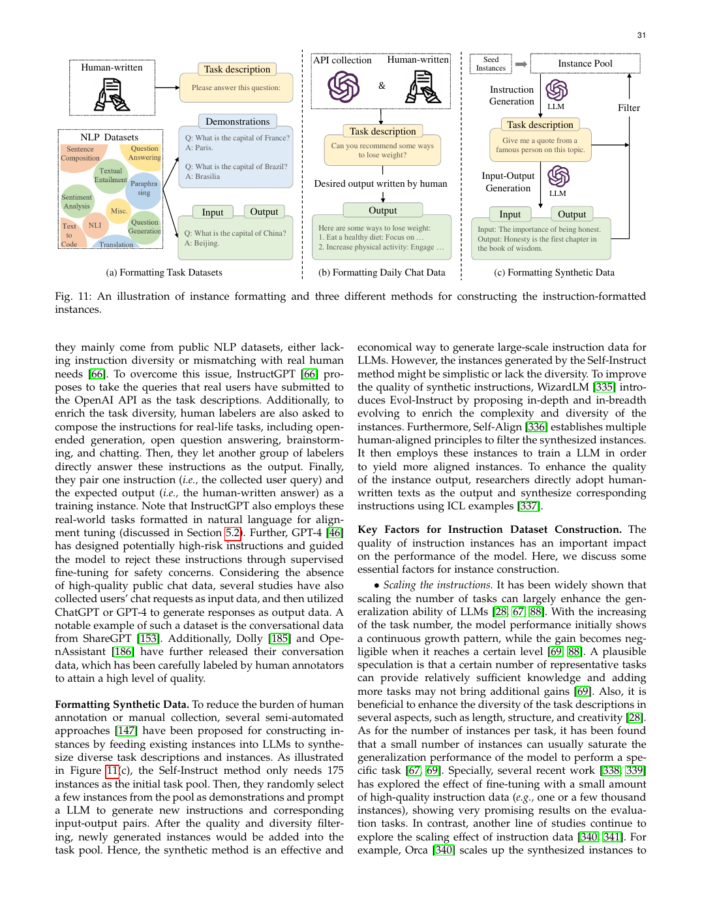
5.1.2 指令微调策略
训练时通常混合不同数据集并按质量或规模重采样。任务平衡避免大数据集支配梯度；少量通用预训练数据可减少遗忘。对话模板必须正确屏蔽用户词元损失，只对助手目标计算损失。打包短样本、长度分桶和序列并行提高吞吐。
实践表明，较小但高质量、多样的指令集可能优于庞大噪声集合。数据数量存在饱和点，模型规模越大，往往越能从少量高质量示例泛化。复杂推理应保留中间步骤，简单任务则不必强制冗长解释。
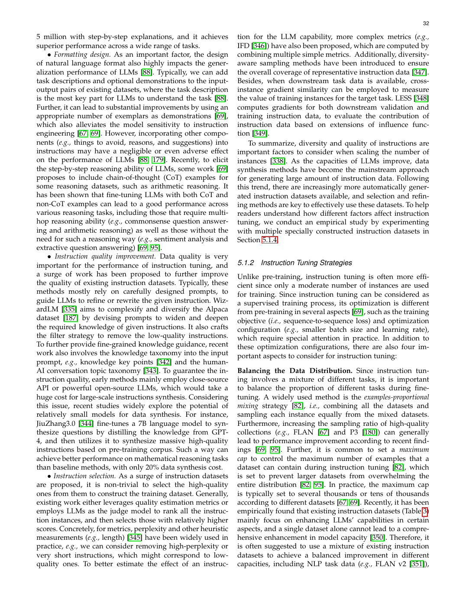
5.1.3 指令微调的作用
指令微调改善未见任务泛化、遵循自然语言要求和零样本表现，并能激活预训练中潜藏的知识。收益依赖模型规模：小模型可能只是学习训练任务，大模型更容易抽象出指令与任务之间的通用关系。
它也会改变输出风格，使模型更像助手，但不等同于安全对齐。模型仍可能产生幻觉、有害回答或迎合用户。过度微调还可能降低生成多样性和基础能力，因此需要独立评估。
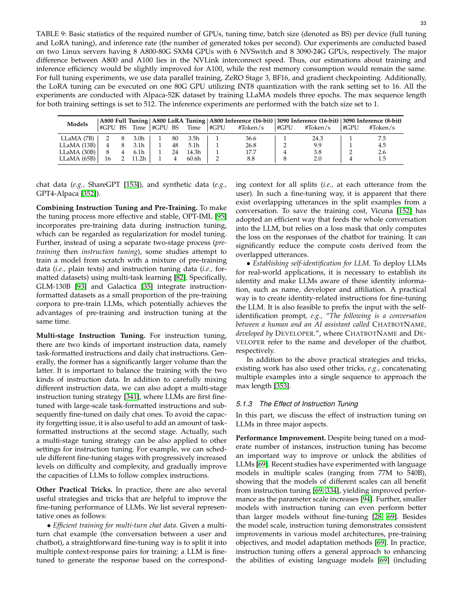
5.1.4 指令微调实证分析
作者在 LLaMA 等模型上比较 FLAN、P3、Natural Instructions、Alpaca 和合成扩展数据，考察数据来源、任务数量、样本规模与模型大小。结果显示：组合多种数据通常优于单一来源；扩充任务覆盖比简单重复更有效；加入高质量合成指令能继续改善，但未经筛选的扩展会引入噪声；不同评测对数据组成高度敏感。
实验还说明，指令数据的格式、回答长度和示例质量会显著影响结果，不能仅按样本总数判断配方。通用能力、代码、数学和对话需要分别测量。
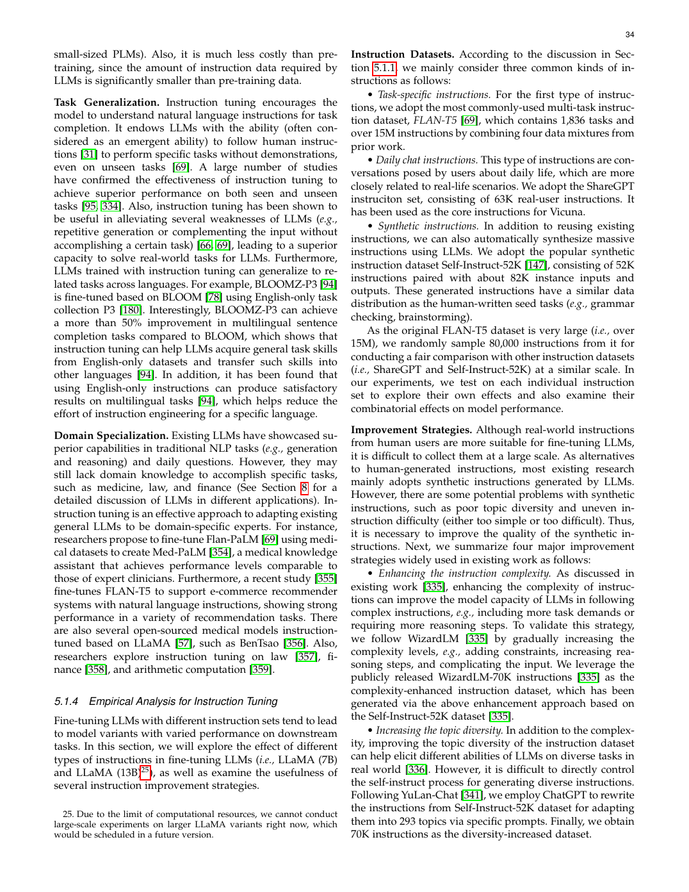
5.2 对齐微调
语言模型的预训练目标是预测文本，而不是自动遵循人类意图。即使回答流畅正确，也可能不帮助用户、不诚实或不安全。对齐微调通过偏好数据和安全规则调整行为。
5.2.1 对齐标准
常见目标概括为帮助性、诚实性与无害性。帮助性要求正确理解意图并给出有用回答；诚实性要求不捏造、不虚假表达确信；无害性要求避免造成个人和社会伤害。三者可能冲突，例如拒绝危险请求会降低表面帮助性，承认不确定性可能让回答不够直接。
对齐标准不是普遍唯一的价值函数。不同文化、用户与场景对适当行为看法不同，需要明确规范、允许合理定制并保留边界。标注者和奖励模型无法覆盖所有现实情境。
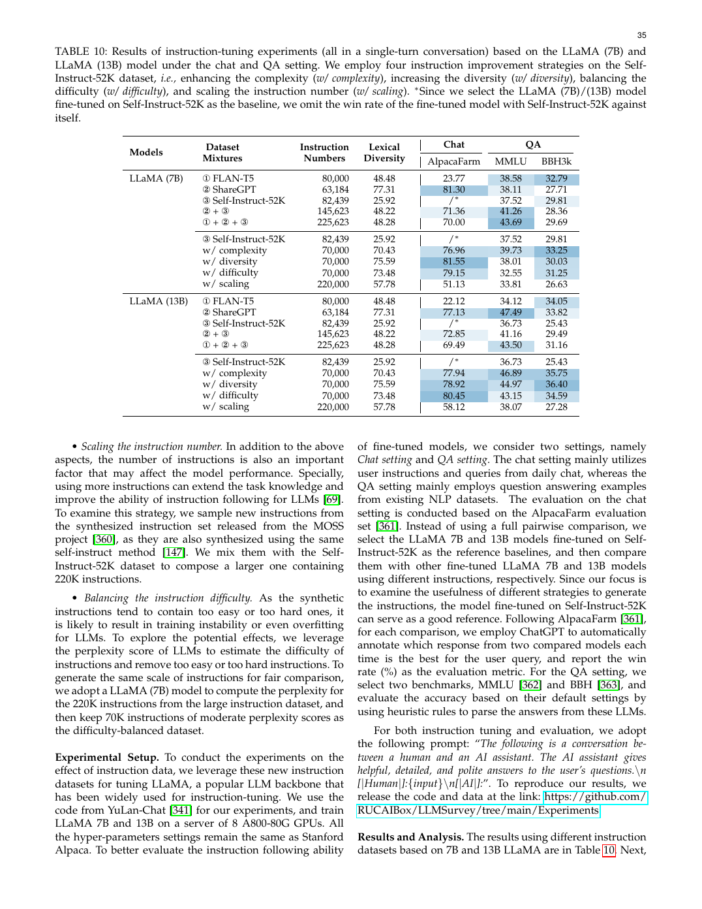
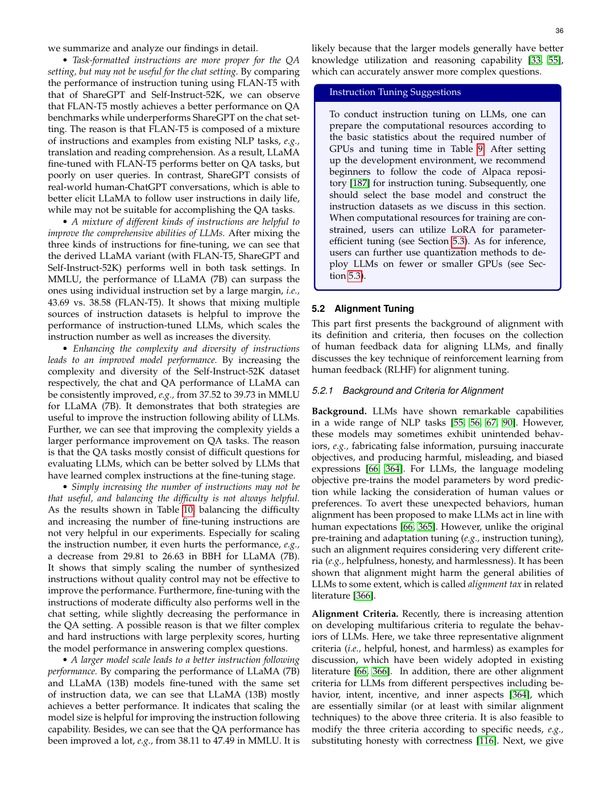
5.2.2 收集人类反馈
给定同一提示，策略模型生成多个回答，标注者成对比较或排序。比较比直接给绝对分数更稳定，但成本随候选数量增加。反馈还可以来自点赞、改写、错误标记和红队测试。
数据质量取决于标注规范、培训、报酬、群体组成和一致性检查。复杂专业问题需要领域专家，敏感内容需要保护标注者。偏好可能受回答长度、语气和表面格式影响，未必代表事实质量。
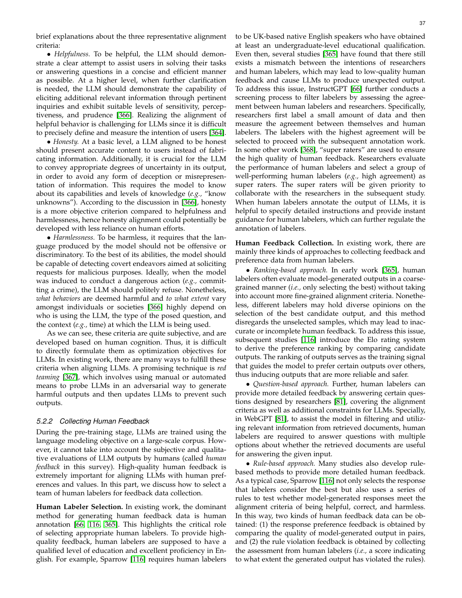
5.2.3 基于人类反馈的强化学习
经典流程包含三步。第一，用高质量示范监督微调基础模型。第二，使用回答比较训练奖励模型，使它为人类更偏好的回答打高分。第三，用近端策略优化最大化奖励，同时用相对监督模型的 KL 惩罚限制策略偏移。
奖励模型只是人类偏好的近似。策略可能钻奖励漏洞，生成冗长、自信或迎合式回答。KL 约束、奖励归一化、混合预训练梯度和持续人工检查用于控制偏移。PPO 需要同时维护策略、参考、奖励和价值模型，训练复杂且显存开销大。
宪法式人工智能和人工智能反馈让模型依据一组原则批评、改写并产生偏好，可减少敏感标注的人力，但教师模型和原则本身的偏差会进入数据。规则奖励模型则把明确安全规范转成分类奖励。
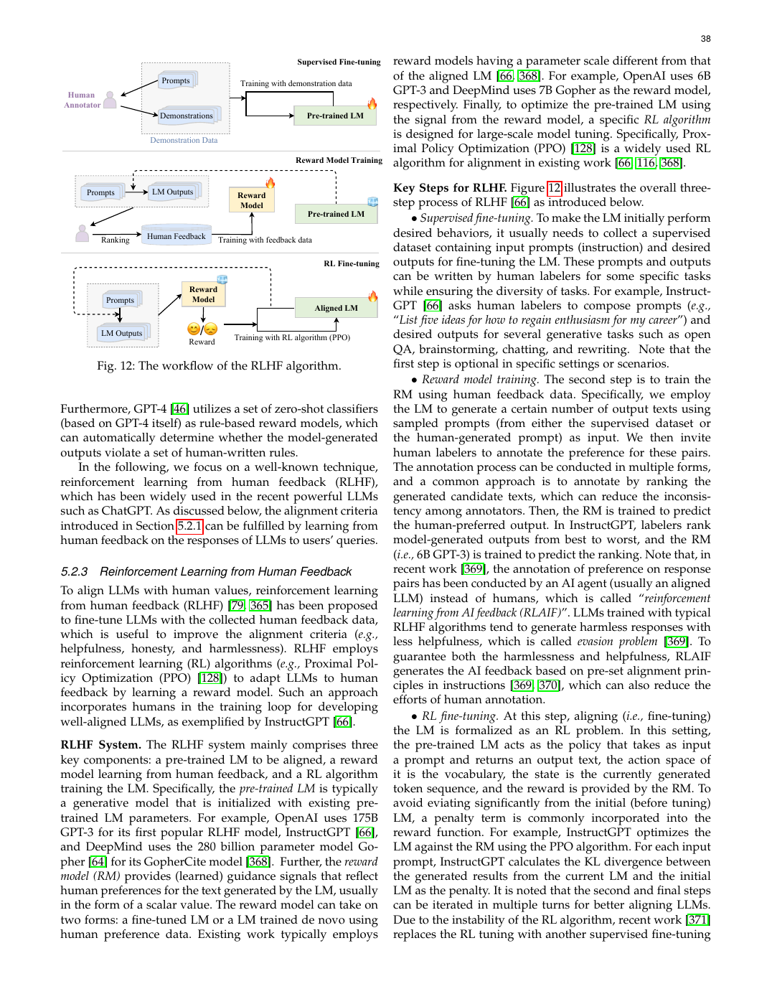
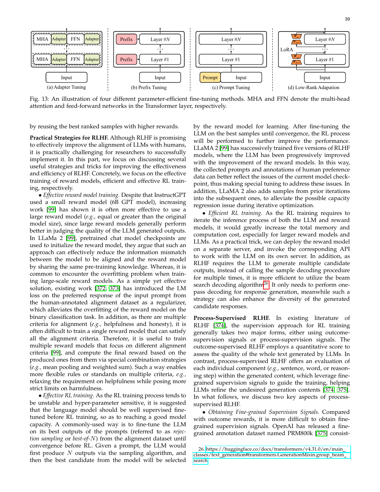
5.2.4 不使用强化学习的对齐
直接偏好优化把奖励建模与策略优化合并为分类式目标：提高偏好回答相对拒绝回答的似然，无需显式训练奖励模型和运行 PPO。IPO、KTO、ORPO、SimPO 等方法修改损失、参考模型或偏好表达，以改善稳定性和效率。
拒绝采样先从模型生成多个候选，用奖励模型或规则筛选最佳回答，再进行监督微调；迭代执行可逐步改进。蒸馏方法用更强模型生成批评和改写。在线方法持续从当前策略采样，能减轻离线偏好分布过时，但成本更高。
这些方法实现简单，并不自动解决偏好偏差、奖励投机和覆盖不足。对齐结果仍需在事实性、安全性、校准性、语言与群体公平上独立评估。
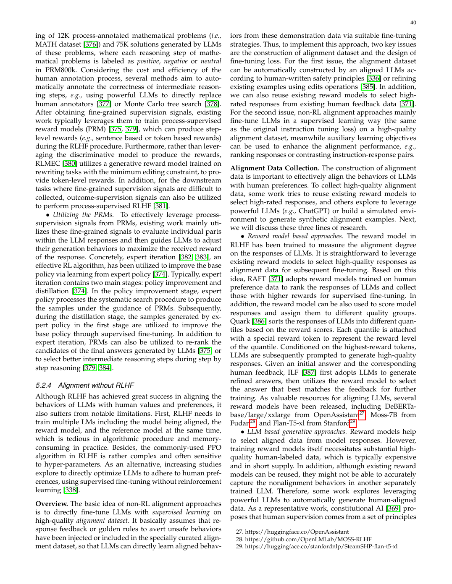
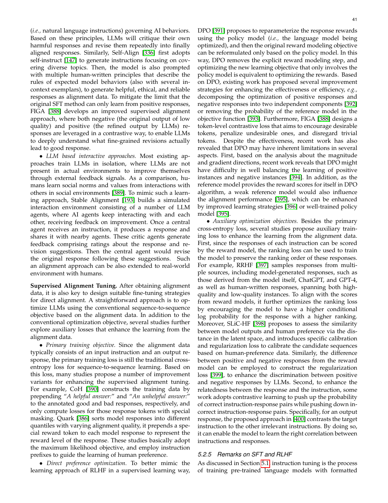
5.3 参数高效模型适配
全参数微调需要保存优化器状态和梯度，成本接近预训练。参数高效方法冻结大部分权重，只训练少量新增或选定参数。
5.3.1 参数高效微调方法
适配器在 Transformer 层中插入小型瓶颈网络；前缀微调和提示微调学习连续虚拟词元；LoRA 把权重更新表示为低秩矩阵乘积，训练后可合并回原权重；IA3 学习缩放向量；BitFit 只更新偏置。QLoRA 把基础模型量化到 4 位并在其上训练 LoRA，显著降低显存。
方法选择取决于任务、数据和部署。LoRA 通用且易合并，多任务可保存多个适配器；提示方法参数更少，但对模型规模和初始化敏感；低秩大小、目标层和量化精度直接影响能力。
5.3.2 大型语言模型上的参数高效微调
实验显示，足够大的模型上，少量可训练参数也能取得接近全参数微调的结果，尤其适用于指令、对话和领域适配。但知识注入、复杂推理或大分布变化可能仍需要更多参数或继续预训练。低比特量化会降低内存，却可能伤害小模型或精细数值任务。
参数高效并不意味着数据和评估可以简化。过拟合、灾难性遗忘和安全退化仍会发生；多个适配器组合时还可能互相干扰。
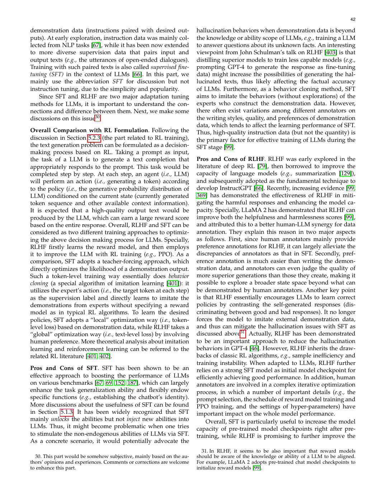
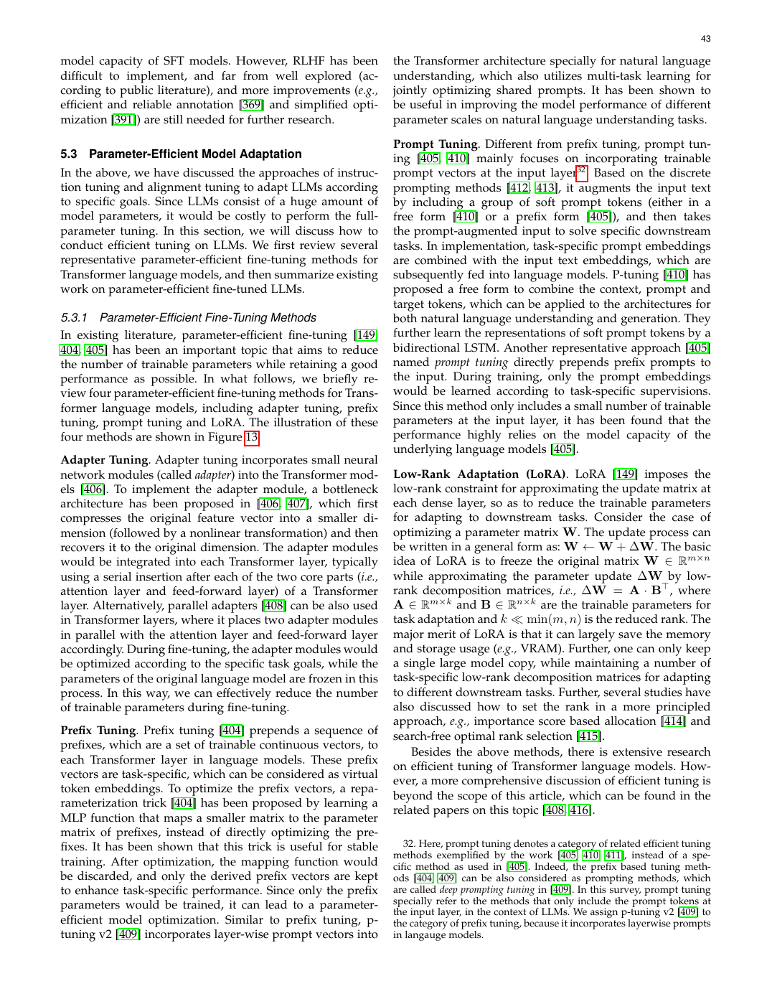
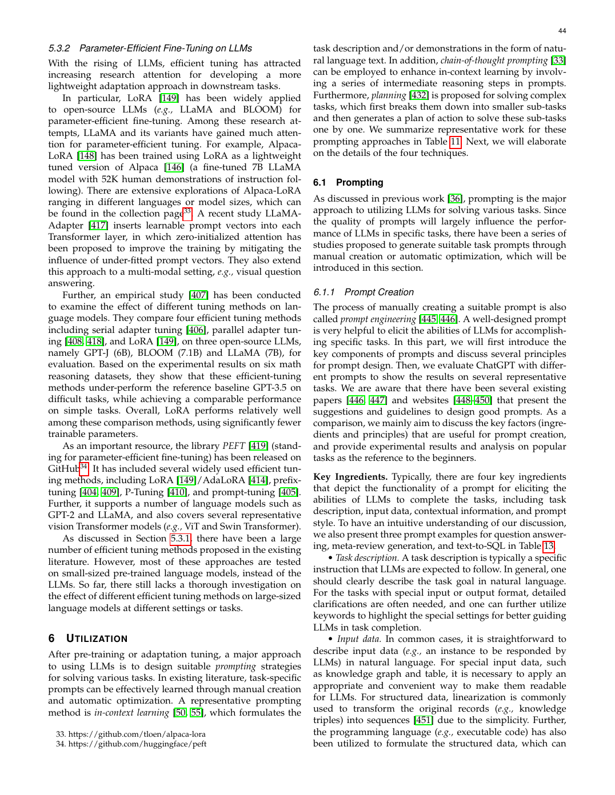
6 大型语言模型使用
预训练或后训练完成后，使用大型语言模型解决任务的主要方式是设计合适的提示。提示可以由人工编写，也可以通过搜索、强化学习或另一个语言模型自动优化。本节依次讨论基础提示、上下文学习、思维链提示和规划。
6.1 提示
6.1.1 提示创建
提示通常由四类要素组成：任务描述、输入数据、上下文信息和提示策略。任务描述应明确目标、输入输出格式及限制条件。例如，摘要任务需要说明要保留主题和结论、允许的长度以及应省略的细节；问答任务应说明答案只能来自给定文章，找不到时如何回答。模糊的指令会让模型自行猜测任务边界，容易产生格式错误或不符合意图的内容。
输入数据如果是普通文本，可以直接放入提示；如果是表格、知识图谱或程序状态，则要先线性化为模型能够读取的序列。线性化应保留字段名、实体和关系，避免只提供无结构的值。对于需要精确计算或执行的输入，可以让模型生成程序，再交给计算器、解释器或搜索工具执行，减少模型直接进行算术和事实判断时的误差。
上下文信息包括背景材料、检索文档、对话历史和任务示例。开放域问答应把检索结果作为证据，并明确文档与问题的分隔方式；示例则同时展示任务目标、输入输出映射和特殊格式。上下文的质量与相关性会直接影响答案，过多无关内容会占用窗口并分散注意力。
提示策略包括直接提问、角色设定、前缀或后缀引导、多轮对话和少样本示例。让模型“逐步思考”可以诱发中间推理；让模型扮演某个领域专家有时能激活相应知识；复杂任务可拆成多轮，每轮只完成一个子任务。角色提示不是可靠的知识来源，仍需要外部证据和事实检查。
提示设计的四项基本原则是：清晰表达任务目标；把复杂任务分解为简单且有顺序的子任务；提供少量高质量、格式一致的示例；采用模型容易识别的格式。特殊标记、换行、编号列表和固定的“问题/答案”字段有助于区分指令、上下文和输出。少样本示例还应覆盖不同难度和表达方式，避免模型只记住单一模板。
经验分析表明，精心设计的提示通常能提高零样本和少样本成绩，复杂任务的提升更加明显。对数学任务，代码格式的示例加上外部程序执行器往往优于让模型直接输出数字；对知识利用和复杂推理，合适的提示有时能接近甚至超过监督基线；对推荐等非传统自然语言任务，提示可以让模型完成基本流程，但仍难替代使用领域数据训练的专门系统。
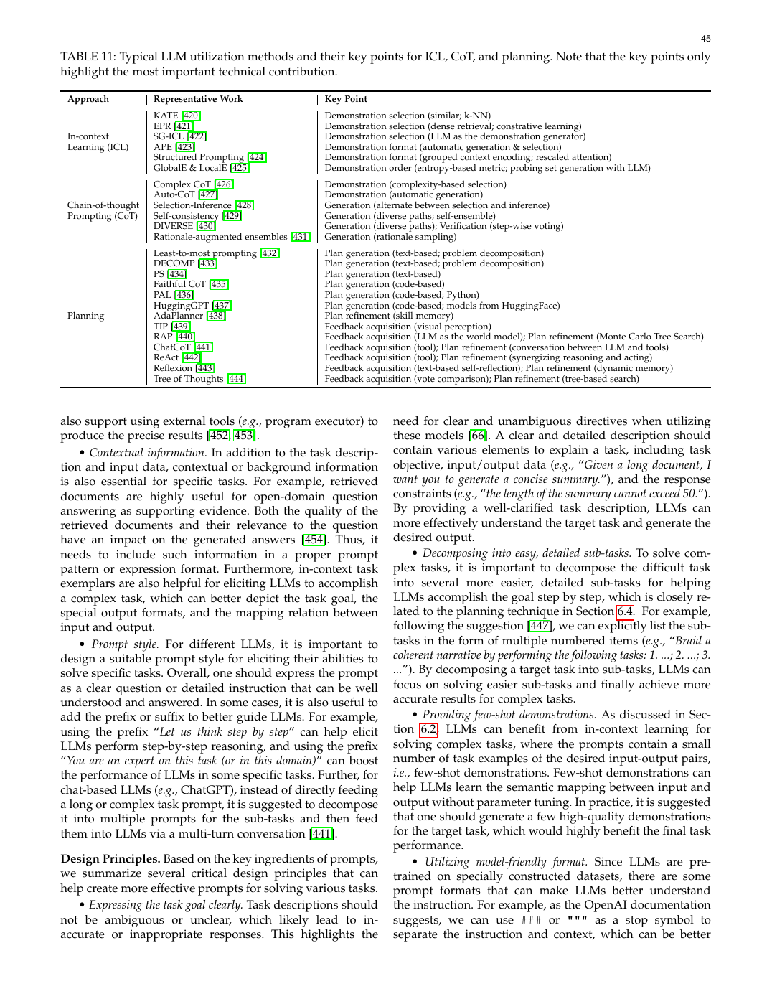
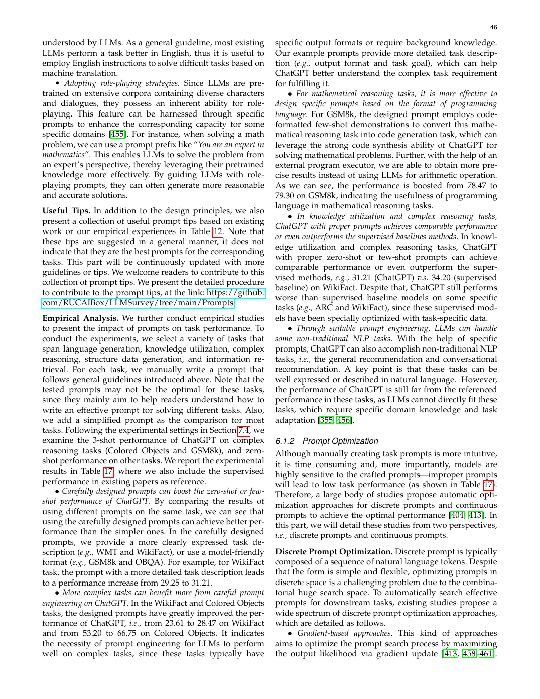
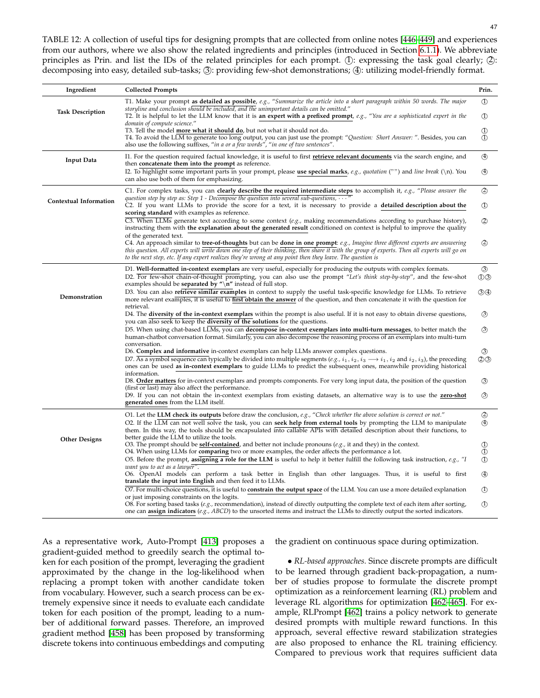
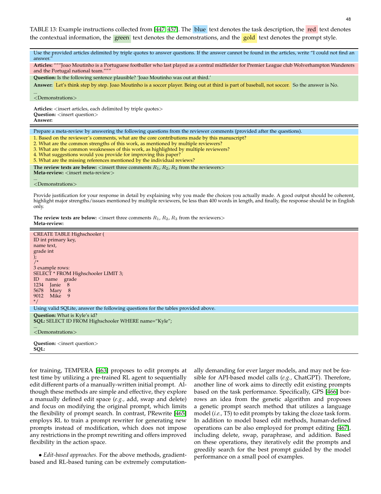
6.1.2 提示优化
人工创建提示直观但耗时，而且模型对措辞、顺序和标点很敏感，因此研究者提出了离散提示和连续提示两类自动优化方法。
离散提示由自然语言词元组成。基于梯度的方法通过最大化目标输出概率搜索候选词；编辑式方法使用增加、删除、交换、改写等操作逐步修改初始提示；遗传算法和强化学习把提示编辑视为策略搜索；语言模型式方法让一个模型生成、批评和改写另一个提示，并依据验证集成绩保留更好的版本。自动搜索空间很大，模型反馈有噪声，单纯追求少量样本上的准确率容易过拟合，因此需要限制编辑幅度、保留历史候选并在独立数据上验证。
连续提示把可训练向量添加到输入或每层隐藏状态中，使用下游损失直接优化。前缀微调在每个 Transformer 层加入连续前缀，提示微调只在输入层加入虚拟词元，深层提示则把向量注入多层表示。它们冻结大部分模型参数，训练成本低，但输入无关的固定提示可能无法适应不同实例；上下文提示和实例自适应提示因此根据输入动态产生连续向量。
在标注稀缺的任务上，提示迁移先在数据充足的源任务上学习连续提示，再用它初始化目标任务。若所有目标实例共享同一提示，可能忽略实例差异；加入任务级与实例级注意力可以缓解这一问题。总体而言，提示优化要同时考虑搜索效率、跨模型迁移、鲁棒性和验证集污染，不能把某个提示在单一基准上的高分视为普遍最优。
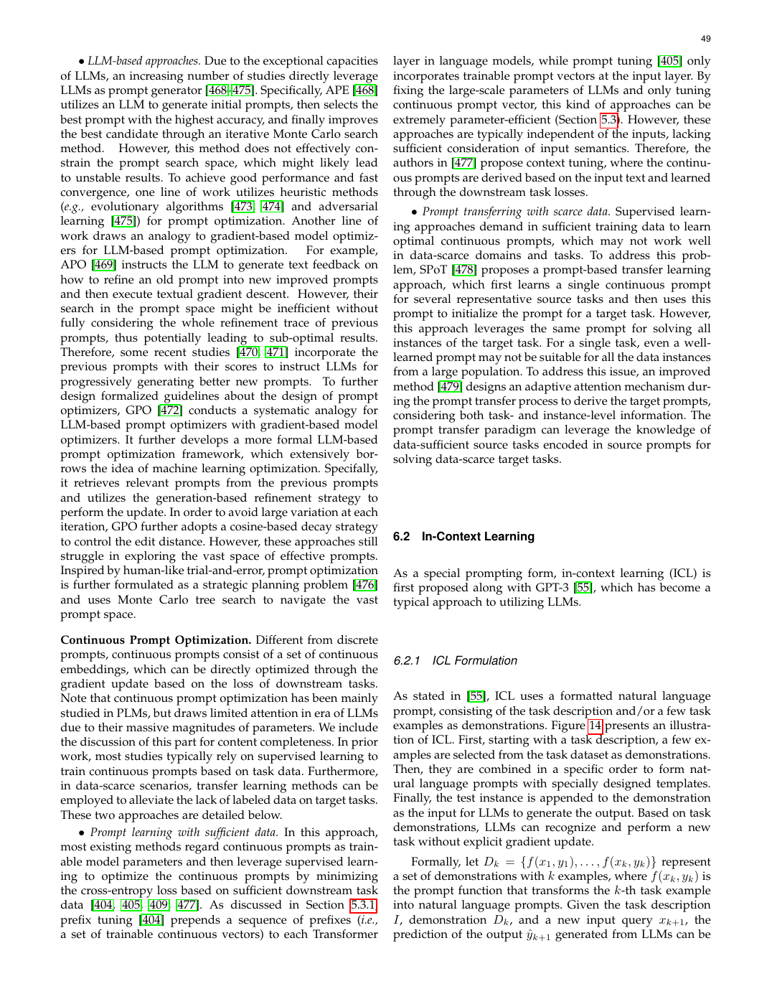
6.2 上下文学习
上下文学习最初随 GPT-3 提出，指模型只通过输入中的任务说明和少量示例完成新任务，而不更新参数。它把模型调用变成自然语言接口：先给出若干输入-输出示例，再把待预测输入追加到末尾，模型根据序列续写答案。
6.2.1 上下文学习形式化
设示例集合为 $D_k=\{f(x_1,y_1),\ldots,f(x_k,y_k)\}$，其中 $f$ 把一个任务样本格式化为自然语言。给定任务描述 $I$、示例集合和新输入 $x_{k+1}$，模型生成 $\hat y_{k+1}$：
实际回答为空白位置，模型通过上下文预测它。上下文学习的效果取决于示例选择、示例格式和示例顺序。它与指令微调都使用自然语言描述任务，但指令微调会更新参数，上下文学习只在推理阶段构造输入；指令微调还可以增强模型在零样本条件下的上下文学习能力。
6.2.2 示例设计
示例选择主要有启发式方法和语言模型方法。基于近邻的方法按语义相似度检索示例，简单且成本低，但逐个选择可能得到重复集合；多样性方法同时考虑覆盖范围和相似度，避免所有示例只来自一个模式。语言模型方法可以用任务成绩衡量示例信息量，也可以先用稠密检索召回，再用对比学习排序，或让模型直接生成候选示例。
格式化示例时，模板需要明确分隔输入、输出和标签。加入任务描述可以帮助模型识别未见任务，加入思维链示例可以展示中间步骤。自动构造方法让模型生成“让我们逐步思考”的推理示例，或先把问题分解再按顺序解决子问题。示例顺序也很重要，模型可能存在近因偏置，倾向重复靠近末尾的答案；可以按与查询的相似度、全局/局部熵或标签编码长度安排顺序。示例选择和排序都应在与测试分布不同的验证集上检查，防止偶然的排列带来虚假的提升。
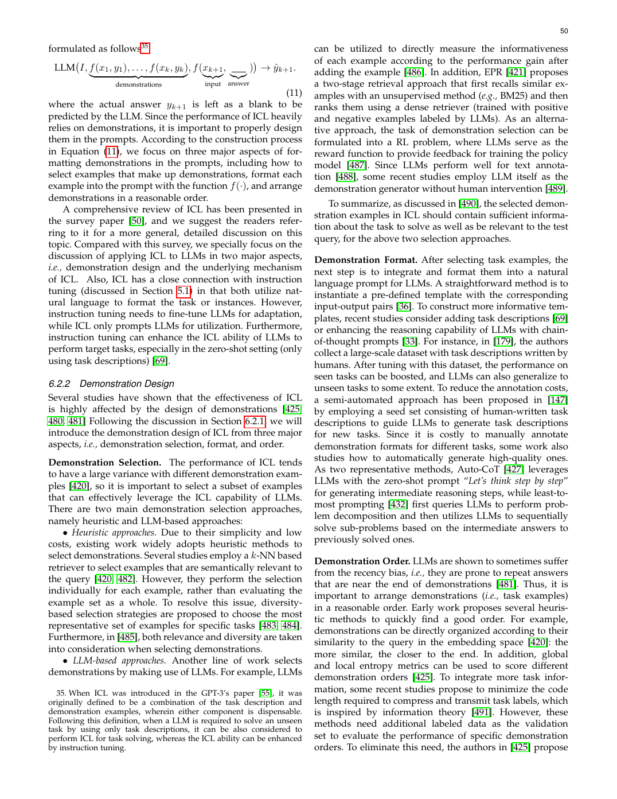
6.2.3 内在机制
关于上下文学习为何有效，现有研究大致有三种解释。第一种认为预训练语料中隐含了许多任务和模式，模型通过示例识别当前任务，再调用参数中已经学到的任务解法。第二种把上下文学习视为隐式梯度下降：模型从示例构造类似梯度的信息，注意力机制在前向传播中完成类似参数更新的运算。第三种观点认为模型在上下文中执行了更一般的算法，如线性回归、决策树或隐式贝叶斯推断。
任务识别能力在较小模型中也可能出现，模型只要判断示例属于哪类已知任务即可；任务学习能力要求模型从示例中学会新的标签映射或解法，通常需要更大模型。把真实标签替换为随机标签可以测试任务识别，把标签替换为没有语义的符号则要求模型真正学习示例中的映射。大模型在后者上的性能下降更小，说明它更能从上下文中提取规则而不依赖先验标签含义。上下文学习仍受示例噪声、位置偏置、上下文长度和预训练分布影响，其理论机制尚未完全解决。
6.3 思维链提示
思维链提示把普通的“输入-输出”示例扩展为“输入-推理链-输出”三元组，要求模型显式生成一系列中间步骤。它主要用于算术、常识和符号推理等需要多步组合的任务。
6.3.1 基本方法
少样本思维链在提示中提供带有中间解答的示例；零样本思维链则使用“让我们一步一步地思考”等诱导性指令，让模型先生成推理过程再给出答案。中间步骤把最终答案拆成多个局部判断，降低长距离映射难度，也使错误更容易被发现和验证。思维链并非对所有任务都有益，简单分类或匹配任务可能因额外生成而出现过度思考和错误传播。
6.3.2 改进策略
示例设计可以提升推理链质量。复杂示例包含更多子步骤，能展示细粒度分解；多样化示例来自不同问题簇，能覆盖更多解法。生成阶段可以采样多条推理路径，用答案多数投票得到自一致性结果；也可以训练路径级和步骤级验证器，对完整解法与中间步骤分别打分。采样增加计算成本，验证器则需要高质量正负路径和可靠的步骤标注。
链式结构还可以扩展为树和图。思维树让一个中间状态产生多个候选，使用评分、广度搜索或深度搜索进行前瞻和回溯；思维图允许不同路径的节点合并，适合需要共享中间结果的任务。代码式思维链把推理计划写成程序交给确定性执行器，能提高算术和符号任务的可靠性。上述方法的共同点是把一次线性生成变成搜索、验证和聚合过程。
6.3.3 进一步讨论
思维链通常在参数足够大的模型上才产生正收益，并且主要帮助需要逐步推理的任务。其能力来源尚无定论：代码数据的算法结构可能提供了有用的推理模式，但仅凭相关性不能证明代码训练是必要条件；非思维链指令微调也不能稳定激活思维链能力。研究还发现，推理链中的文本和模式比单纯的数值符号更重要，二者相互促进：文本帮助模型组织模式，模式又帮助模型产生可检查的文本。
6.4 规划
上下文学习和思维链可以处理许多任务，但面对数学证明、多跳问答和长时程操作时仍容易陷入局部错误。规划方法把复杂目标拆成子任务，先生成动作计划，再执行、获取反馈并修订计划。
6.4.1 总体框架
规划框架通常包含任务规划器、计划执行器和环境。规划器由大型语言模型担任，生成自然语言动作序列或可执行程序；执行器可以是语言模型、代码解释器、搜索器或外部应用；环境返回执行结果、错误信息、视觉信号或其他代理的消息。长期任务还需要记忆模块保存和检索计划、技能与反馈。
流程是“理解目标 - 生成计划 - 执行动作 - 获取反馈 - 修订计划”的循环。规划与强化学习不同：这里强调先规划、后执行的解耦结构，执行反馈用于更新后续提示，而不是每一步都把策略和环境状态混在一个训练回路中。
6.4.2 计划生成
文本式方法直接要求模型列出步骤。计划与求解提示显式加入“先制定计划”，自我规划和分解方法用少样本示例展示如何拆解任务。工具增强方法让模型学习何时调用搜索、计算器和接口，并把返回结果纳入后续计划。
代码式方法要求模型生成 Python、规划语言或其他可执行表示，然后交给确定性求解器。忠实思维链和程序辅助语言方法把生成与执行分离，避免模型在自然语言中“假装”执行算术；具身任务可以把计划编译成虚拟环境中的动作。代码计划更可验证，但需要定义安全的执行沙箱和清晰的工具接口。
6.4.3 反馈获取
内部反馈来自模型自身。模型可以比较多个候选计划，估计成功概率，或把稀疏的成功/失败信号转成具体的文字建议并写入记忆。外部反馈来自代码解释器的错误、搜索结果、视觉模型、虚拟世界和其他协作代理。外部信号通常更接近任务事实，但格式可能不是自然语言，需要先抽取关键状态。
6.4.4 计划修订
计划修订有三类方式。推理方法让模型解释反馈并更新下一步；回溯方法在候选失败时退回上一个状态，重新选择未探索动作，或者整体重写计划；记忆方法把成功计划、失败原因和自我反思存入长期记忆，后续任务检索并复用。向量数据库可提高长期记忆的检索效率，遗忘和强化机制则避免记忆无限增长。规划系统还必须处理工具失败、错误反馈、循环调用和安全边界。
7 能力与评估
大型语言模型的参数规模和通用性不断提高，评估不能只看单一任务的准确率。本节先介绍语言生成、知识利用和复杂推理三类基础能力，再讨论人类对齐、环境交互和工具操作等高级能力，随后整理综合基准、评估方法和实证分析。
7.1 基础能力
7.1.1 语言生成
语言生成既包括根据提示续写文本，也包括条件生成和结构化生成。自动回归模型通常用词元级交叉熵或困惑度评估语言建模，用双语互译指标评估翻译，用摘要的词元重叠和语义相似度评估摘要。困惑度可以衡量预测分布，却不能充分反映事实性、连贯性、风格和任务完成度；因此生成评估需要结合人工判断或更强模型的成对比较。
条件生成还涉及代码、表格、知识三元组和对话。代码生成应同时检查语法、可执行性、单元测试通过率和安全性；结构化生成要验证字段完整性、约束满足和格式合法性；对话要评估相关性、连贯性、信息量、礼貌与安全。大型语言模型在长文本和开放式创作中通常比传统系统更自然，但容易重复、偏题或捏造细节。
7.1.2 知识利用
知识利用考察模型能否回忆预训练数据中的事实、根据上下文定位证据并在多跳关系上完成推断。闭卷设置只提供问题，测试参数中存储的知识；开放书设置另外提供文档、检索器或数据库，测试模型能否读取和整合外部证据。评估时应区分知识缺失、检索失败、证据误读和推理错误。
常见任务包括事实问答、知识补全、实体关系预测、阅读理解和多跳问答。大型语言模型在高频知识和常见表达上表现较好，对长尾实体、时间敏感事实和跨文档关系容易出错。使用少样本示例、检索增强、代码执行和结构化知识图谱可以提升表现，但仍需检查答案是否真的由证据支持，而不是语言上看似合理。
7.1.3 复杂推理
复杂推理包含数学、符号、常识、逻辑和多步规划。算术题要求精确计算，数学文字题还要求识别变量、列式和验证；符号任务测试规则组合和状态转换；常识推理考察隐含知识与因果关系。直接提示经常产生中间步骤错误，思维链、自一致性、程序执行、检索和验证器可提高可靠性。
推理评估不仅应报告最终答案，还应记录推理路径是否有效、答案是否稳定、不同提示和采样之间的方差，以及模型是否在知道答案后编造解释。对于开放式证明或长答案，人工评审和可执行验证通常比词元匹配更可信。
7.2 高级能力
7.2.1 人类对齐
对齐评估关注模型是否帮助用户、诚实表达和避免伤害。帮助性包括理解意图、完成任务和在信息不足时提出澄清；诚实性包括不捏造事实、承认不确定性和忠实引用证据；无害性包括拒绝危险请求、保护隐私和避免歧视。三者并非总能同时最大化，例如对危险请求的拒绝可能降低表面帮助性。
评估可以使用安全分类器、规则测试、红队提示、人类偏好比较和成对回答排名。需要覆盖越狱、提示注入、隐私泄露、刻板印象、过度迎合和不当拒答。单一总分容易掩盖长尾风险，必须报告不同风险类别、语言、群体和攻击强度下的结果。
7.2.2 与外部环境交互
交互能力要求模型根据观察状态采取动作，并在多轮反馈中保持目标。环境可以是网页、游戏、机器人仿真、软件工程仓库或对话系统。评估指标包括任务成功率、步骤数、时间、成本、探索效率和失败恢复能力，还要检查模型是否遵守环境约束。
与静态问答相比，交互任务的错误会累积：一次误读网页状态可能导致后续动作全部偏离。可执行的动作验证、状态记忆、回滚和人类确认能降低风险。多代理场景还要评估通信成本、角色分工、冲突解决和个体贡献是否可追溯。
7.2.3 工具操作
工具操作考察模型能否选择正确工具、生成合法参数、理解返回值并把结果纳入回答。工具包括搜索、计算器、数据库、代码解释器、绘图和外部模型。应分别测试工具选择、参数生成、错误处理、工具链编排和安全权限。
大型语言模型可以把自然语言任务转成函数调用或程序，但容易调用不存在的接口、遗漏必要参数、重复调用或把工具返回的错误当成事实。基于模式约束的解码、函数签名校验、沙箱执行和调用日志能够提高可靠性。工具评估应报告成功率和成本，而不只看最终答案。
7.3 基准与评估方法
7.3.1 综合评测基准
综合基准把多个任务和能力放在同一套协议中。MMLU 覆盖不同学科知识，BIG-bench 和 BIG-bench Hard 包含大量语言、推理和规则任务，HELM 从准确性、鲁棒性、校准、效率、公平和偏见等角度评估模型，AGIEval 使用人类考试题，开放模型评测还常使用零样本和少样本统一排行榜。
综合基准的优点是便于横向比较，缺点是任务分布可能偏向英语、公开数据可能被预训练污染，且一个总分无法解释能力差异。评估应记录模型版本、系统提示、示例、解码温度、工具权限和上下文长度，避免把协议差异误认为模型能力。
7.3.2 评估方法
自动评估包括精确匹配、词元重叠、语义相似度、可执行测试、校准误差和排序指标。对于开放式答案，常使用强语言模型作为评审员，要求它按照明确标准给分或比较两个回答。模型评审成本低、覆盖广，但存在位置偏置、长度偏置、同源偏好、评审不稳定和被提示操纵的问题。
人工评估应提供任务定义、评分量表、示例答案、标注者培训和一致性统计。为了减少偏差，可以隐藏模型名称、随机化回答顺序、进行多轮重复并结合专家审核。评估结果还应报告置信区间、显著性检验和错误类别，而不是只列出最高分。
7.4 实证评估
7.4.1 实验设置
作者从语言生成、知识利用、复杂推理、人类对齐、环境交互、工具操作等能力中选择代表任务，使用统一的提示和解码设置比较闭源与开放模型。对复杂推理报告零样本、少样本和思维链条件；对工具任务报告搜索和模型接口开启与关闭时的差异；对生成任务同时采用自动指标和人工或模型评审。
实验特别注意上下文长度、示例顺序、答案位置和重复采样。每个任务使用独立测试集，避免把公开训练集或排行榜题目直接用于提示。对于开放模型，还记录参数规模、量化方式和推理硬件，以便区分模型能力与部署条件。
7.4.2 结果分析与发现
结果显示，扩大模型规模通常改善语言生成、知识利用和复杂推理，但收益因任务而异。精心编写的提示对复杂任务提升更明显；思维链和自一致性主要帮助算术、常识和符号推理，对简单分类可能无益甚至有害。代码执行器能显著降低数学计算错误，检索和工具调用能补充模型缺失的时效知识。
模型在遵循指令和多轮对话方面取得明显进步，但开放式事实问答仍存在幻觉。高级能力之间也不完全相关：语言流畅不代表事实正确，工具调用成功不代表安全，偏好评审高分不代表推理有效。研究因此建议把能力、可靠性、安全、效率和公平分别报告，并保留错误样本供定性分析。
8 应用
大型语言模型已经从通用文本生成扩展到经典自然语言处理、信息检索、推荐、多模态、知识图谱和模型评估，并在医疗、教育、法律、金融和科学研究中形成具体应用。
8.1 研究社区
8.1.1 经典自然语言处理任务
对词级和句子级任务，模型可以根据自然语言指令完成词性标注、命名实体识别、关系抽取、情感分析、文本分类和相似度判断。常用做法是把输入、标签和任务描述放在统一模板中，让模型生成标签或结构化结果。对于序列标注，可要求模型输出带有边界标记的实体列表，或把任务转换为问答和生成。
文本生成任务包括翻译、摘要、改写、纠错、问答和对话。大型模型的优势是可以通过一个接口处理多个任务，且少样本示例能快速适应新格式；不足是输出长度、风格和事实性不稳定，评估仍需任务专用指标和人工检查。结构化约束、检索证据和后处理能降低格式错误。
8.1.2 信息检索
大型语言模型在检索系统中有三种角色：查询理解与扩展、文档表示与召回、结果重排序与答案生成。模型可以把口语问题改写为多个搜索查询，用双塔或交叉编码器表示查询和文档，也可以在候选文档上直接评分。对长文档，滑动窗口、分块摘要和层次化检索能够减少上下文压力。
检索增强生成先召回相关文档，再把证据与问题一起交给模型生成答案。它可以减少参数知识过时和幻觉，但检索错误会传播到答案；需要评估召回率、证据覆盖、引用正确性和生成忠实度。模型也可作为检索器，但高成本和偏置使得专用稠密检索器在大规模系统中仍有价值。
8.1.3 推荐系统
大型语言模型可用于用户画像、候选生成、排序解释和对话推荐。把用户历史、商品属性和交互行为序列化为文本后，模型可以生成候选商品或预测下一项；也可以先用传统召回系统得到候选，再让模型根据自然语言偏好排序并生成理由。对话推荐把多轮对话中的约束、否定和兴趣变化纳入用户状态。
纯生成推荐面临候选不存在、商品信息过时、热门偏置和评价不可控等问题。实践中更常见的是让语言模型与向量检索、协同过滤和重排序器结合，并用点击率、转化率、覆盖率、多样性和长期满意度共同评估。
8.1.4 多模态大型语言模型
多模态大型语言模型在语言模型骨干上加入视觉编码器、投影层或跨模态注意力，使模型能够理解图片、图表、视频和文本。典型训练流程包括图文对齐预训练、视觉指令微调和多轮对话对齐。模型可以完成图像描述、视觉问答、文档理解、图表分析和视觉推理。
难点包括视觉细节遗漏、空间关系错误、OCR 失败、模态间幻觉和高分辨率计算成本。高质量视觉指令数据、区域级监督、分辨率自适应和工具辅助可以改善表现。视觉能力不能只用语言答案评估，还应检查对象、关系、数量和引用区域是否与图像一致。
8.1.5 知识图谱增强
知识图谱提供实体、关系和可追踪结构，可用于增强模型输入、监督预训练、检索证据和校验生成结果。常见方法是把三元组线性化，或先检索与问题相关的子图，再让模型进行路径推理。图结构还可以帮助模型处理实体消歧、关系组合和多跳问答。
图谱增强的瓶颈是覆盖范围、时效性和实体链接。错误的图谱事实会被模型当作可靠证据，过大的子图又会稀释相关信息。实际系统应联合使用文本和图结构，保留来源、时间戳和置信度，并对最终答案执行事实校验。
8.1.6 大型语言模型评估
大型语言模型也可被用作评估器，自动给生成文本打分、比较两个答案、判断安全违规或生成错误类别。它们能理解开放式标准，覆盖范围远超词元重叠指标，适合摘要、对话和创作任务。但评估器会受到位置、长度、风格和自我偏好影响，且可能忽略细微事实错误。
可靠的模型评审需要明确评分标准、提供参考答案、随机化候选顺序、使用多个评审模型，并用人工样本校准。评估器输出应保留理由和置信度，不能把模型评审的单次结果当作绝对真值。
8.2 具体领域
医疗应用包括病历摘要、医学问答、临床决策支持、药物发现和患者沟通。医疗文本涉及隐私和高风险决策，模型必须引用指南或原始证据，明确不确定性，并由专业人员复核。教育应用覆盖个性化辅导、题目生成、作文反馈和课程规划，需要防止错误知识、过度代写和对学生隐私的泄露。
法律应用包括法规检索、合同审查、案例摘要和法律文书草拟。法律文本长、术语精确且责任重大，系统应保留条款来源、版本和适用辖区，不能把生成意见当作法律结论。金融应用包括研究报告、风险分析、客服和合规审查，需要严格控制时效、数据权限和投资建议风险。
科学研究辅助覆盖文献检索、实验设计、代码生成、数据分析和论文写作。模型可以加速信息整理与假设生成，但可能虚构论文、公式或实验结果。科研系统应要求可复现的代码、数据和引用链，把模型作为辅助工具而不是未经验证的结论来源。
9 高级专题
9.1 长上下文建模
大型语言模型的上下文窗口决定了单次调用能够读取和生成的词元数量。窗口越长，模型越能处理整本书、长代码仓库和多轮记录，但注意力计算、显存占用和训练数据成本也随长度迅速增长。长上下文能力还不等于有效使用远处信息，模型可能出现“中间丢失”现象，只利用开头和结尾的内容。
9.1.1 位置嵌入缩放
Transformer 需要位置表示区分词元顺序。绝对位置编码通常只能覆盖训练长度，直接外推到更长序列会导致位置分布偏移。相对位置方法根据词元距离建模，旋转位置编码把位置角度作用于查询和键，便于在不改变内容表示的情况下表达相对位置信息。
位置嵌入缩放方法通过压缩位置角度、插值原有位置或调整频率基，使模型能够外推更长窗口。线性缩放、动态缩放和分段缩放在不同长度上有不同权衡：压缩过强会损失短距离分辨率，压缩不足则无法稳定外推。位置编码的修改通常还需要少量长文本继续训练来恢复性能。
9.1.2 上下文窗口扩展
扩展窗口有三条路线。第一，继续预训练或微调包含长序列的模型，让注意力直接学习新长度；第二，采用稀疏、滑动窗口、分块或层次注意力，降低全连接注意力的复杂度；第三，使用外部记忆、检索和递归摘要，把超长文档拆成可管理的片段。
长上下文评估需要区分“能放进去”和“能用起来”。除了困惑度，还应测试远距离复制、跨段检索、多文档问答、长代码修改和信息位置变化。文档越长，相关证据越容易被无关内容淹没；分块策略、检索排序和提示结构往往与位置编码同样重要。
9.1.3 长文本数据
长上下文训练需要长度分布合理、边界完整且来源可靠的数据。简单拼接短文本会产生不自然的跨文档关系，过度重复长文档则造成污染和记忆。数据准备应保留书籍章节、论文、代码仓库和对话的自然顺序，过滤重复、截断、版权和隐私风险。
训练中可以先用短序列获得稳定基础，再逐步增加长度；也可以混合不同长度并对长样本重采样。计算预算有限时，长度课程和分块注意力能减少浪费。长文本能力还应通过继续训练与检索增强联合获得，而不是仅靠扩大位置窗口。
9.2 大型语言模型智能体
智能体把语言模型置于“感知、规划、行动、记忆”的循环中，使模型能够在外部环境中完成持续目标，而不是只生成一次回答。
9.2.1 总体框架
智能体通常包含任务规划器、工具或动作执行器、环境观察器和记忆模块。规划器把目标拆成步骤，执行器调用搜索、代码、数据库或虚拟世界动作，观察器把结果转为模型可读的状态，记忆模块保存历史事件、技能和反思。系统可以采用单智能体循环，也可以让多个具有不同角色的智能体协作或辩论。
智能体的关键是状态表示和循环控制。每一轮都应记录目标、当前状态、已完成动作、失败原因和下一步候选，并设置最大步数、预算、权限和终止条件。没有边界的自主循环可能重复调用工具、扩大错误或执行危险操作。
9.2.2 应用
在网页和软件工程中，智能体可以搜索信息、填写表单、运行测试和修改代码；在数据分析中，智能体选择数据集、生成脚本、执行统计和解释结果；在游戏和机器人仿真中，智能体根据视觉和环境反馈规划动作；在研究工作流中，智能体可以检索论文、整理证据、提出实验方案并生成报告。
多智能体框架让规划、执行、批评和验证由不同角色承担。角色分工可以提高覆盖率，但通信会增加成本，且多个模型可能共同放大错误。应记录每个代理的输入、输出、工具调用和对最终决策的贡献。
9.2.3 讨论
智能体的主要风险包括幻觉、提示注入、工具越权、隐私泄露、长期记忆错误和成本不可控。部署时应采用最小权限、工具白名单、输入清洗、沙箱、人工确认和可回滚状态。评估除了任务成功率，还要统计步骤效率、恢复能力、越权率、调用成本和对环境变化的鲁棒性。
9.3 训练分析与优化
9.3.1 训练内存估算
训练内存不仅包括模型参数，还包括梯度、优化器状态、激活和临时通信缓冲。以混合精度和 Adam 优化器为例，每个参数可能需要保存低精度权重、低精度梯度、单精度主权重以及一阶和二阶矩，优化器状态往往比权重本身更大。激活内存还随批大小、序列长度、层数和隐藏维度增加。
估算时应分别计算参数、梯度、优化器、激活和通信峰值，并考虑词表嵌入、输出层、检查点和碎片。只有知道峰值而不是平均占用，才能判断一个配置能否在目标 GPU 上稳定运行。
9.3.2 内存优化
数据并行、张量并行、流水线并行和专家并行可以把参数与计算分布到多张卡上；参数分片方法把优化器、梯度和权重按设备切分，减少单卡复制。激活检查点通过重新计算前向结果换取显存，低精度训练和量化则降低存储与通信。
优化策略之间存在通信和计算权衡。过度分片会增加同步开销，过度重计算会降低吞吐，低精度可能引入溢出或精度损失。训练前应使用小模型和短序列验证数值稳定性，再逐步扩大规模。
9.3.3 效率优化
效率优化覆盖数据管道、算子、通信和调度。数据去重、长度分桶和序列打包减少填充；融合算子、FlashAttention 和高效矩阵乘法降低内存访问；异步预取和重叠通信让 GPU 保持忙碌；动态批处理提高不同长度请求的利用率。训练日志应同时记录每秒词元、硬件利用率、通信比例、能耗和有效损失下降。
9.4 推理分析与优化
9.4.1 推理效率
自回归推理分为预填充和逐词元解码。预填充一次处理完整输入，计算密集；解码每次只生成一个词元，但需要读取所有历史键值，通常受显存带宽限制。批量大小、上下文长度、输出长度和并发请求决定吞吐与延迟。
常见指标包括首词元延迟、每词元延迟、总延迟、吞吐、显存占用和成本。短请求更关心响应延迟，长请求和服务端更关心吞吐与批处理效率。评估必须区分输入长度和输出长度，避免用平均值掩盖长尾请求。
9.4.2 系统级优化
键值缓存保存已经计算的注意力键和值，避免每个新词元重复处理前缀；分页缓存和连续批处理可在请求动态加入和退出时减少碎片。投机解码让小模型提出多个词元，再由大模型并行验证；前缀缓存复用相同系统提示；量化、权重压缩和高效内核降低带宽压力。
服务系统还要处理请求调度、流式输出、超时、取消、负载均衡和多租户隔离。系统级优化必须在真实工作负载上评估，因为一个优化可能提高吞吐却恶化首词元延迟或公平性。
9.4.3 算法级优化
算法级方法包括减少层数或词元、稀疏注意力、投机采样、早停、候选树验证和多查询或分组查询注意力。Medusa 等方法训练额外预测头，让模型一次提出多个后续词元；其他方法通过草稿模型、检索候选或并行解码降低串行步数。算法优化需要保持输出质量，并在不同任务和温度下验证。
9.5 模型压缩
9.5.1 量化
量化把浮点权重、激活或缓存映射到更低比特表示。训练后量化不需要重新训练，成本低，适合部署；量化感知训练在训练过程中模拟低比特误差，通常能保持更好精度但成本更高。权重量化、激活量化和权重-激活联合量化对硬件和误差分布的要求不同。
大型模型存在少量异常值，直接逐张量量化会造成明显误差。按通道、按组或混合精度量化可以让异常通道使用更高比特；校准数据应覆盖目标任务和长度分布。量化评估不能只看困惑度，还应测试上下文学习、数学、代码和安全拒答。
9.5.2 其他压缩方法
剪枝通过删除不重要的权重、注意力头、隐藏维度或层来减少计算。非结构化剪枝压缩率高但硬件加速困难，结构化剪枝更容易部署但可能损失更多能力。知识蒸馏让小模型学习大模型的输出、隐藏状态或推理链；低秩分解把权重近似为小矩阵乘积；词表裁剪和权重共享可进一步降低存储。
压缩通常需要少量继续预训练或蒸馏恢复性能。应观察不同能力是否出现不均衡退化，尤其是长尾知识、代码、数学和安全行为。剪枝后的模型还可能出现新的越狱和幻觉模式，不能只依据参数量或速度宣布成功。
9.5.3 开源库
常用压缩库提供 GPTQ、AWQ、SmoothQuant、 bitsandbytes、GGUF、量化感知训练和结构化剪枝实现。选择工具时应确认权重格式、计算内核、目标 GPU/CPU、是否支持键值缓存和是否保留训练能力。不同库的校准数据、舍入策略和默认分组大小可能导致不可直接比较的结果。
9.6 检索增强生成
检索增强生成把外部知识源引入模型生成过程。基本流程是将用户问题编码并检索相关文档，把文档与问题拼接后生成答案；更复杂的系统会先重写问题、分解子问题、交替检索与推理，或在生成后逐句检索证据并编辑答案。
检索器可以是稀疏词法检索、稠密向量检索或二者混合；重排序器根据查询和文档的交互重新排列候选。文档切分要平衡粒度与语义完整性，索引需要记录来源、时间和权限。生成器应引用证据并在没有足够支持时拒答或说明不确定性。
检索增强能够更新模型知识、降低事实幻觉并支持私有数据库，但也带来检索延迟、上下文拥挤、恶意文档注入和证据冲突。完整评估要分开报告召回、证据利用、答案正确性、引用忠实度和端到端延迟。
9.7 幻觉
9.7.1 定义
幻觉是模型生成与输入、外部事实或自身证据不一致的内容。它包括虚构实体和引用、错误属性、错误推理、忽略给定证据，以及在不知道时仍以肯定语气回答。开放式生成中，流畅性和真实性并不等价。
9.7.2 来源
知识边界是重要来源：问题超出预训练数据、涉及过时或长尾事实时，模型可能用相似模式补全。预训练数据中的错误、重复、偏见和幻觉会被模型吸收；领域知识不足会影响医疗、法律等专业问题。自回归训练的曝光偏差、长序列注意力衰减和教师强制也可能造成错误累积。
后训练中的知识蒸馏、偏好优化和过度迎合会让模型更愿意给出完整回答，即使证据不足。采样温度和其他解码策略提高多样性时，也会提高低概率词进入输出的机会。模糊指令、无关上下文、恶意文档和长对话记忆错误都会进一步增加幻觉。
9.7.3 检测
模型式检测使用更强语言模型抽取事实陈述并判断其真伪；不确定性式检测利用词元概率、对数几率和多次采样的一致性；工具式检测调用搜索、数据库、计算器或代码解释器核验具体陈述。检测系统应把长答案拆成原子事实，区分事实错误、推理错误和无证据陈述。
9.7.4 缓解
人类对齐可以用诚实性偏好和安全规则训练模型，但偏好数据也可能强化迎合。检索增强为模型提供可靠证据，生成后核查和编辑可以删除与证据冲突的内容；上下文交替检索和推理能帮助复杂多跳问题。对比解码、利用高层事实表征、加入外部知识分类器和限制采样也有助于降低幻觉。
缓解策略没有单一最优解。系统应允许模型拒答、显示来源和不确定性，并针对不同领域建立事实库、评估集和人工复核流程。降低幻觉不能以牺牲所有帮助性为代价，拒答率和可用性要一起报告。
9.8 复杂推理
9.8.1 概述与分析
最新的大型推理模型会在最终回答前分配更多词元和计算进行长思维链推理。与标准思维链相比，长思维链不要求推理始终线性向前，而是允许计划、尝试、检查、反思、回溯和探索在同一响应中交替出现。这种模式类似人类解决难题时的慢思考。
长思维链的优势有两点：模型可以发现错误后自我修订，而不是一次生成后无法回头；自然语言空间可以近似实现树搜索或图搜索，把候选路径、评分和回溯写进文本。代价是输出更长、推理延迟更高、验证困难，且模型可能在简单任务上无谓地产生冗长思考。
9.8.2 长思维链数据构建
数据蒸馏使用更强模型或人工专家生成长推理过程，再筛选答案正确、步骤连贯且包含反思和回溯的样本。搜索式合成把每个中间步骤作为树节点，用蒙特卡洛树搜索等方法探索候选并根据最终结果回传分数。多智能体协作让不同代理提出解法、批评假设、辩论和合并结论。
数据质量比单纯规模更重要。长度应覆盖不同难度，不能把冗余语言误当作深度推理；数学、代码和可验证任务适合使用结果奖励，开放式任务还需要过程奖励或训练的评审模型。错误尝试和修订痕迹有助于学习探索，但必须避免把无法纠正的错误模式大量加入训练集。
9.8.3 训练方法
长思维链指令微调先让模型学习“思考-答案”的格式和推理模式。少量高质量蒸馏数据就可能激活反思、回溯和分解能力，并且这种推理模式可以迁移到没有出现在训练集中的学科。缺点是模仿学习容易达到性能上限，且模型可能对简单问题也默认输出长推理。
强化学习训练通常包含策略模型、奖励模型和强化学习算法。策略模型先用长思维链数据热身，奖励模型可基于数学答案、代码测试等可验证结果给出正确性奖励，也可加入格式、完整性和长度约束。为降低成本，群体相对策略优化和无价值模型的策略方法常被采用。训练中应监控输出长度、奖励投机、探索温度、参考模型更新和问题难度。
9.8.4 进一步讨论
长思维链属于测试时扩展：通过增加生成词元、采样路径、规划调用或工具交互换取性能。比较方法时要同时看每个词元带来的收益和可达到的性能上限。自一致性等启发式聚合在一定规模后可能饱和，强化学习能够继续改善推理策略，但训练稳定性和数据选择更难。
未来需要解释长思维链能力如何从基础模型中形成，区分真实推理与事后合理化，设计能检查中间步骤的评估，并研究推理成本、可解释性、安全和隐私之间的关系。专门领域的长思维链模型有望辅助科学研究，但必须保留可验证证据和人工监督。
10 结论与未来方向
大型语言模型通过大规模无监督预训练、模型与数据缩放、指令和偏好后训练，以及提示、检索、工具和智能体使用，形成了覆盖语言生成、知识利用和复杂推理的通用能力。本综述围绕资源、预训练、后训练、使用和评估五条主线整理了主要技术，并指出能力、效率、可靠性和安全性必须同时考虑。
未来研究至少包括以下方向：建立更清晰的缩放与涌现理论，理解预训练数据如何决定模型能力；发展可扩展、可验证的长上下文和长思维链训练；设计更高效的架构、并行系统、量化和推理服务；改进检索、工具和智能体的事实性与安全边界；建立防污染、跨语言、跨领域且能衡量不确定性的评估协议；以及在医疗、法律、教育和科研等高风险领域保留证据链、权限控制和人类责任。
大型语言模型不是单一网络结构或单一排行榜分数，而是由数据、训练、对齐、推理系统和使用场景共同决定的技术系统。只有把模型能力与可复现的工程实践、透明的评估和持续治理结合起来，才能把研究进展转化为可靠的实际应用。
参考文献
原论文第 97 至第 144 页为完整参考文献。为保留作者、论文题名、出版信息、编号和链接的逐项对应关系，本译文按原页顺序嵌入参考文献截图。